封面：完全性定理
纯封面页，只有大标题「完全性定理」。本段从第 2 页正式开讲。整讲的目标，将在下面的「背景A0」里先用直觉讲清楚：所谓完全性，就是要证明 ⊢（语法上能证）和 ⊨（语义上为真）这两件事其实是同一件事。
背景A0：这一整讲到底在干什么？
一句话目标：把「能证明」和「真」划等号
数理逻辑里有两套完全不同的「⼯具」，描述同一批公式：
| 符号 | 读法 | 它是什么 | 这是哪一侧 |
|---|---|---|---|
Γ ⊢ A | Gamma 推出 A | 从 Γ 出发，按推理系统 G 的规则，能搭出一棵证明树到 A | 语法 (syntax) |
Γ ⊨ A | Gamma 语义蕴含 A | 凡是让 Γ 全真的解释，也一定让 A 真 | 语义 (semantics) |
⊢ 是「形式游戏」：只看符号、按规则推，不管真假。⊨ 是「意义」：谈模型、谈真。它们长得毫不相干。
Γ ⊨ A 成立 ⇒ Γ ⊢ A 也成立（凡是真的都能证出来）。再配上反方向已知的可靠性定理（Soundness）Γ⊢A ⇒ Γ⊨A（凡能证的都真），两边合起来就是 ⊢ ⇔ ⊨。
为什么这很了不起？
它意味着：一台只会机械地按规则拼符号的机器，理论上能证出所有语义上为真的东西，不会有「真但永远证不到」的漏网之鱼。Gödel 在 1929/1930 年证明了它（注意：这是「完全性定理」，和他后来更有名的「不完全性定理」是两码事，不要混）。本讲用的是 Henkin（亨金，美国逻辑学家）在 1949 年给出的更简洁的证法。
本讲的三步路线图（贯穿全篇，先记住）
难点在「⊨ ⇒ ⊢」这半边。Henkin 的策略不是直接造证明树，而是绕道造模型。换个等价说法：要证「Γ⊢A」，等价于证「Γ∪{¬A} 不可满足（没有模型）」。于是问题变成——给一个协调的公式集，造出一个模型来。三步：
- 第 1 步 · 协调性（本段 p2–p10）：定义「协调 = 推不出矛盾」，把它的各种等价说法摸清。这是「有模型」的必要前提。
- 第 2 步 · 极大协调集 + Henkin 集（本段 p11–p20 起头，后续段落继续）：把协调集撑大到「再加任何一条都会矛盾」的极致状态。这种集合信息完整到可以直接读出一个模型。
- 第 3 步 · 完全性（后续段落）：用极大协调 Henkin 集造出模型，收口证明
⊨ ⇒ ⊢。
背景A1：⊢「可证」精确含义 + 一阶 G 系统量词规则速查 + Cut
你学过命题逻辑的 Gentzen 系统 G′，但本讲全程在一阶系统 G 里推，多了量词规则；而且证明里 Cut 用得非常勤。这一页把这两块门槛补齐，务必看厚，后面每张证明树都建立在这里。
1 · 先把 ⊢（可证 / provable）钉死
本讲的相继式（sequent）写成 Δ ⊢ A，意思是「以 Δ 里的公式为前提，能推出 A」。一个相继式「可证（provable）」=存在一棵证明树：树根是这个相继式，每一步都套用 G 的某条规则，所有叶子都是公理（形如 A ⊢ A 的恒真相继式）。
Δ ⊢（右边什么都没有）。它读作「从 Δ 推出矛盾 / 推出空」，也就是 Δ 自相矛盾、不一致。整段 p3 起的「Δ⊢ 可证」全是这个意思——右边是空的，别看漏了。它是「矛盾」的形式定义，记牢。
2 · 一阶 G 系统的四条量词规则速查
下面表里 A(t) 表示把 A(x) 中的 x 替换成项 t；A(y) 里的 y 是新变元（eigenvariable，本征变元），要求 y 不在相继式别处自由出现——这个「新鲜」条件是量词规则的灵魂。L=作用在 ⊢ 左边（前提侧），R=作用在右边（结论侧）。
| 规则 | 形态（上＝前提，下＝结论） | 读法 / 直觉 |
|---|---|---|
∀L | Δ, A(t) ⊢ Θ ⇒ Δ, ∀x A(x) ⊢ Θ | 前提里有「所有 x 都 A」，就能取任一具体项 t 实例化用 |
∀R | Δ ⊢ A(y), Θ ⇒ Δ ⊢ ∀x A(x), Θ | 要证「对所有 x」，只需对一个任取的新变元 y 证出来（y 不许在别处露面） |
∃L | Δ, A(y) ⊢ Θ ⇒ Δ, ∃x A(x) ⊢ Θ | 前提「存在 x 使 A」，给那个 x 起个新名字 y 当作已知来用 |
∃R | Δ ⊢ A(t), Θ ⇒ Δ ⊢ ∃x A(x), Θ | 要证「存在 x」，只需给出一个见证项 t 把 A(t) 证出来 |
3 · Cut 规则——本段的主力武器
Cut（割规则）让你把一个中间引理接进证明：
————————————————— Cut
Δ, Γ ⊢ Θ
读法：左边证出了 A；右边假设 A 当前提推出了 Θ。Cut 把 A 当「中转站」消掉，得到不含 A 的合并结论。直觉就是日常推理里的「三段论 / 引理替换」：我先证出 A，再用 A 去证目标，那我整体就证出了目标。
· p5：手上有
Δ ⊢（矛盾）和 Δ ⊢ A，用 Cut 把它们拼成 Δ ⊢ A 形态的扩展——「既然能推出矛盾，那随便什么 A 都能推出来」。· p20：从「
Δ, A ⊢ 可证」配合 Δ ⊢ A，Cut 出 Δ ⊢，说明 Δ 自身矛盾。
引言：Henkin 方法与本讲三步
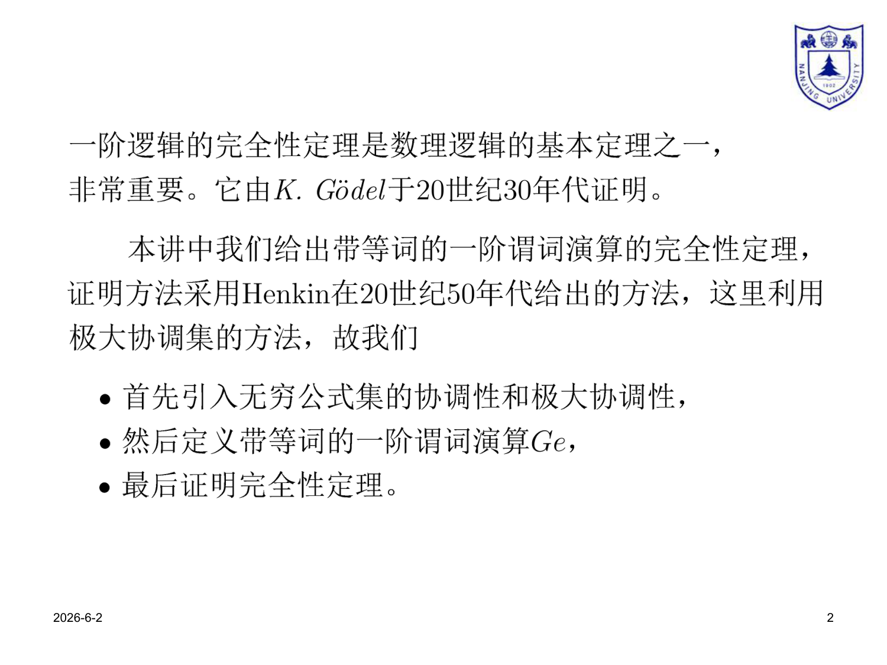
这页在说什么
本页是全讲的「作者的话」，交代了三件事：谁证的、用谁的方法、分几步走。
- 谁证的：完全性定理由 K. Gödel（哥德尔）在 20 世纪 30 年代证明，是数理逻辑的基本定理之一。
- 用谁的方法：本讲证的是「带等词（with equality）的一阶谓词演算」的完全性，采用 Henkin（亨金）20 世纪 50 年代的方法，核心工具是极大协调集。
- 「带等词」是什么意思：就是逻辑里多一个特殊的二元谓词
=（相等），并配上它该满足的公理（自反、对称、传递、可替换）。这让我们能谈「两个对象是同一个」。本段不展开等词细节，先知道系统叫Ge（e = equality，带等词的一阶谓词演算）即可。
三步路线（和背景A0 完全对应）
- 首先引入无穷公式集的协调性（consistency）和极大协调性（maximal consistency） —→ 本段 p3–p18；
- 然后定义带等词的一阶谓词演算
Ge—→ 后续段落； - 最后证明完全性定理 —→ 后续段落。
定义6.1：协调 Con 与矛盾 Incon
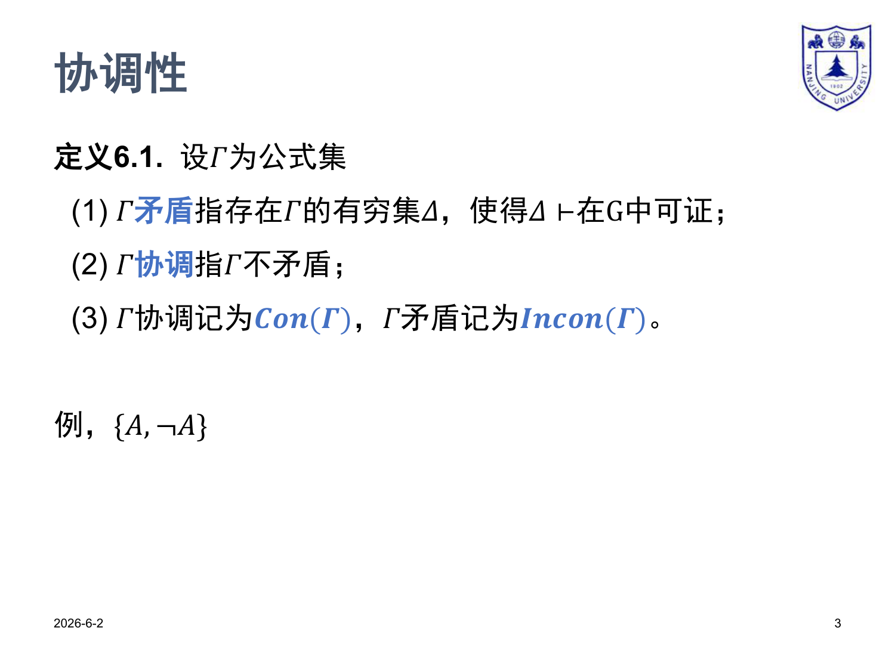
核心定义（本讲的奠基词）
| 术语 | 英文全称 | 记号 | 定义 |
|---|---|---|---|
| 矛盾 | inconsistent | Incon(Γ) | 存在 Γ 的有穷子集 Δ，使 Δ ⊢ 在 G 中可证（右边空！见背景A1） |
| 协调 | consistent | Con(Γ) | Γ 不矛盾，即没有任何有穷子集能推出空（推不出矛盾） |
① 「矛盾」是对相继式
Δ⊢ 的可证性下的定义，不是「集合里同时有 A 和 ¬A」这种朴素印象——虽然 {A,¬A} 正是最典型的矛盾集（见下例）。② 为什么只要求「有穷子集」？ 因为证明树是有限的，一次推导只能用到有限条前提。所以谈矛盾，只需盯住某个有穷子集能否推出空即可，
Γ 本身可以是无穷集。③ Con / Incon 是「集合的性质」，不是某条公式的性质。主语永远是一个公式集
Γ。例：{A, ¬A}
它的有穷子集就是自己。直觉上 A 和「非 A」摆在一起当然矛盾——形式上，确实能搭出 A, ¬A ⊢（右边空）的证明树。这棵树长什么样，正是 p9 要画的，到那里你会看到它怎么用 ¬L 一步合上。所以这个例子不是随口举的，它是后面 (4)⇒(1) 证明的原型。
背景A2：为什么「矛盾」=「能证出任何东西」？爆炸原理
p4 的命题6.2 会把「矛盾」翻来覆去给出 4 种等价说法，其中最反直觉的是 (3)：「对任何公式 A，都能从 Δ 推出 A」。第一次看会懵：矛盾怎么会等于「啥都能证」？这一页先用直觉打通。
爆炸原理（Principle of Explosion，拉丁名 ex falso quodlibet「从假可推出任何东西」）
核心断言：一旦系统里能推出矛盾，它就废了——任何公式（包括最荒谬的）都能被证出来。
形式上为什么成立（预告 p5）
如果 Δ ⊢（推出矛盾 / 空）可证，那么对任意 A，把这个矛盾当「左前提」、配上平凡的 Δ, A ⊢ A，用一次 Cut 就能得到 Δ ⊢ A。矛盾在手，A 随便挑。这就是 p5 那张 Cut 证明树要干的事，到那页你会看到符号版。
命题6.2：矛盾的 4 个等价刻画（陈述）
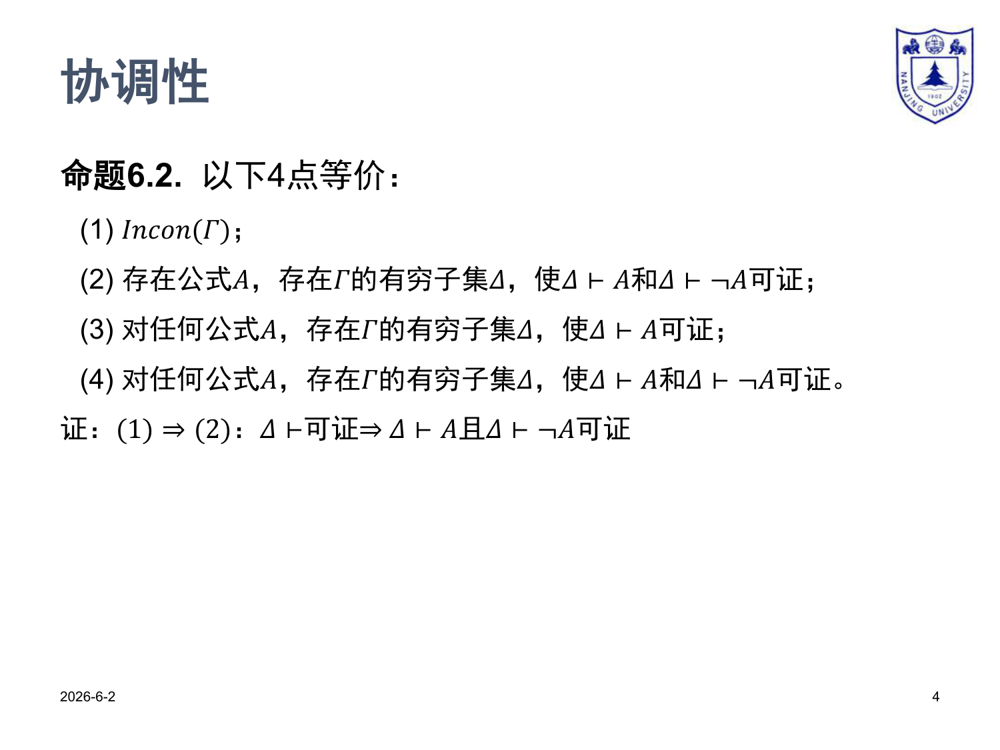
四条等价命题（先读懂在说什么）
命题6.2 说：对公式集 Γ，下面 4 点互相等价（任一成立则全部成立）。Δ 一律指 Γ 的某个有穷子集。
| 内容 | 白话 | |
|---|---|---|
| (1) | Incon(Γ) | Γ 矛盾（定义本身） |
| (2) | 存在公式 A 与有穷 Δ，使 Δ⊢A 且 Δ⊢¬A 都可证 | 能找到某一个 A，它和它的否定都能证出来 |
| (3) | 对任何公式 A，存在有穷 Δ 使 Δ⊢A 可证 | 啥都能证（爆炸，见背景A2） |
| (4) | 对任何公式 A，存在有穷 Δ 使 Δ⊢A 且 Δ⊢¬A 都可证 | 对每个 A，A 和 ¬A 都能证 |
证明策略：环形 (1)⇒(2)⇒(3)⇒(4)⇒(1)
证 4 个命题等价，标准手法是排成一个环，逐个推下去，回到起点即全部打通。本页先迈第一步 (1)⇒(2)，并给出文字版：Δ⊢ 可证 ⇒ Δ⊢A 且 Δ⊢¬A 可证。怎么从「推出空」变出「推出 A」，下一页 p5 用 Cut 补上那张树。
(1)⇒(2)：用 Cut 从「矛盾」拆出任意 A
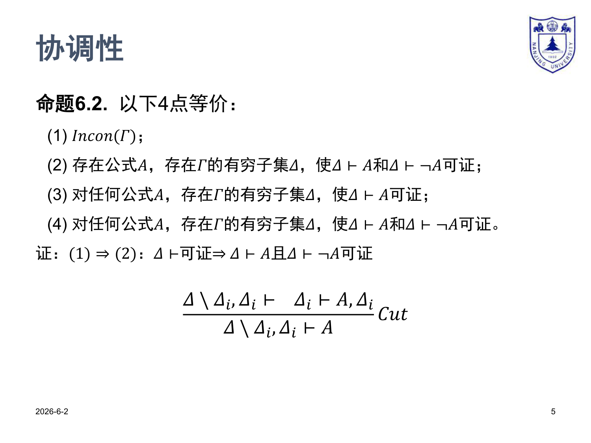
目标
已知 Incon(Γ)，即有有穷子集 Δ 使 Δ ⊢（空右边）可证。要造出某个 A 使 Δ ⊢ A 可证（进而 ¬A 同理，得到 (2)）。
逐行拆解页面那棵 Cut 树
页上的树（记号还原，Δi 是真正用到的那个有穷子集，Δ∖Δi 是 Δ 里没用到的部分，靠「弱化」补进来凑齐）：
———————————————————— Cut
Δ∖Δi, Δi ⊢ A
- 左前提
Δ ⊢（即Δ∖Δi, Δi ⊢）：这是已知的矛盾证明，右边是空的。它充当 Cut 的「证出了被割公式」那一支——准确说，矛盾相继式可以视作「证出了任意 A」的源头。 - 右前提
Δi ⊢ A, Δi：这是平凡可得的（右边出现了想要的 A，靠弱化 / 公理即可凑出），把 A 引进来。 - Cut 一刀：把中间公式消掉，下方得到
Δ ⊢ A。A 是我们随便挑的——这正兑现了背景A2 的爆炸直觉：矛盾在手，任意 A 可证。
Δ∖Δi 这种集合切分只是技术上把「实际用到的有穷子集」和「凑数的部分」分开记账，不影响理解，第一次看可以略过细节。把同样的树对 ¬A 再走一遍，就同时得到 Δ⊢A 和 Δ⊢¬A，(2) 成立。
(2)⇒(3)：矛盾规则一步爆炸
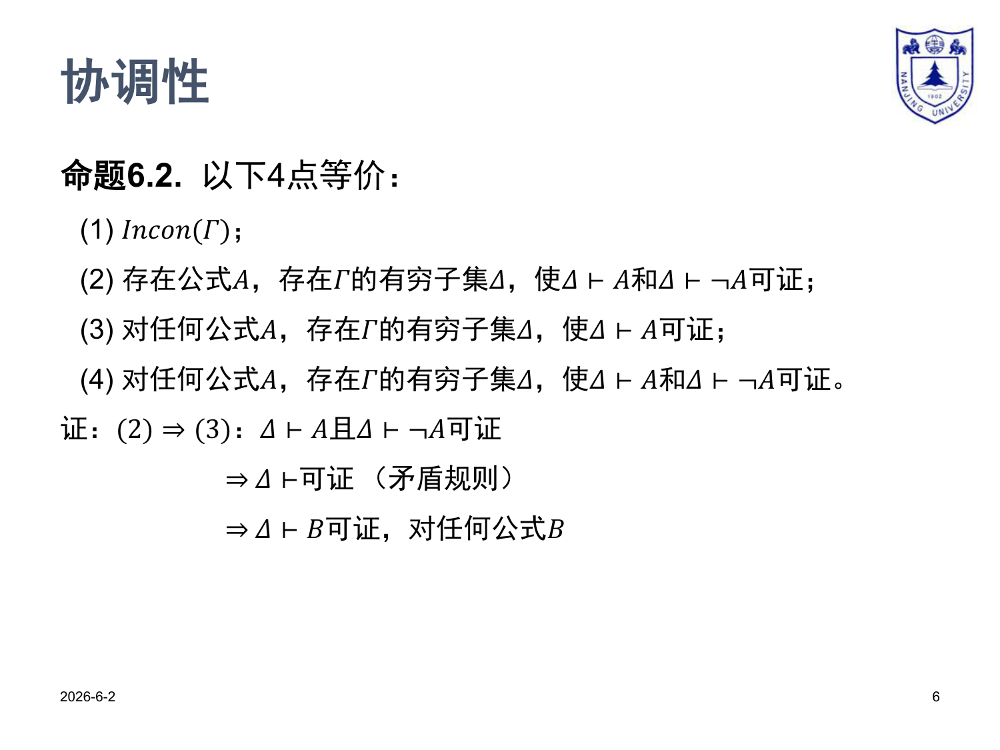
这步在干什么
已知 (2)：有某个 A 使 Δ⊢A 且 Δ⊢¬A 都可证。要得 (3)：对任意 B，Δ⊢B 可证。页面三行推导：
Δ⊢A且Δ⊢¬A可证；- ⇒
Δ⊢可证（矛盾规则：A 和 ¬A 同时被证，就推出空）； - ⇒
Δ⊢B可证，对任何 B。
¬L + ∧R + Cut 组合的打包简称。一旦落到 Δ⊢（空），再套 p5 的 Cut 套路就能挂上任意 B。这正是背景A2 爆炸原理的形式兑现：矛盾 ⇒ 啥都能证。略讲理由：核心机械（矛盾收口 + Cut 挂任意公式）和 p5 同源，无新意，PPT 也只列三行。
(3)⇒(4)：令 A = B∧¬B 的巧劲
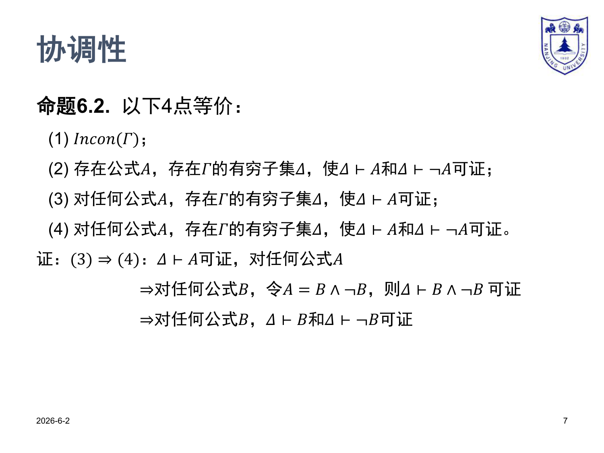
这步的巧妙代换
已知 (3)：对任意公式都能证。要得 (4)：对任意 B，Δ⊢B 且 Δ⊢¬B 都可证。技巧是：
- 对任意 B，令 A = B∧¬B（B 合取非 B，一个内建矛盾的公式），代入 (3) 得
Δ ⊢ B∧¬B可证。 - 从
Δ⊢B∧¬B出发，拆合取就能分别得到Δ⊢B和Δ⊢¬B。
B∧¬B 这个怪公式？因为 (3) 给的是「任意单个公式可证」，而 (4) 要的是「B 和 ¬B 成对可证」。把这一对打包进一个合取式 B∧¬B 喂给 (3)，再用合取规则拆开，就一举得到两半。这是逻辑证明里常见的「用合取把两个目标捆成一个」的手法。怎么从 Δ⊢B∧¬B 拆出 Δ⊢B，下一页 p8 给那张 ∧L + Cut 的树。(3)⇒(4)：拆合取的证明树
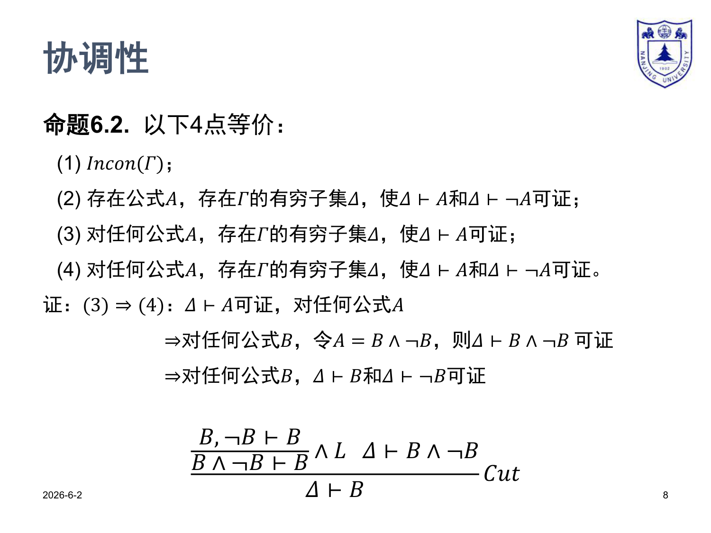
页上那棵树读法
——————— ∧L Δ ⊢ B∧¬B
B∧¬B ⊢ B
—————————————————— Cut
Δ ⊢ B
- 左上
B,¬B ⊢ B：是公理（左边出现了 B，右边也是 B，平凡成立）。 ∧L一步：把左边的B, ¬B两条前提合并成一条合取前提B∧¬B，得B∧¬B ⊢ B。∧L（合取左规则）的作用就是「左边有合取式，可拆成它的合取支当前提」，这里反过来用作合并。- 右边
Δ ⊢ B∧¬B：来自 p7 把A=B∧¬B代入 (3) 得到的已证相继式。 - Cut：以
B∧¬B为中转，左右一割，得Δ ⊢ B。对¬B同理另证一棵，(4) 成立。
Δ⊢B，它由一次 Cut 得到，Cut 的两个上方前提分别在左右两支里被证出。只要每支顶端都落到公理或已知，整棵树就成立。(4)⇒(1)：闭合环路的完整证明树
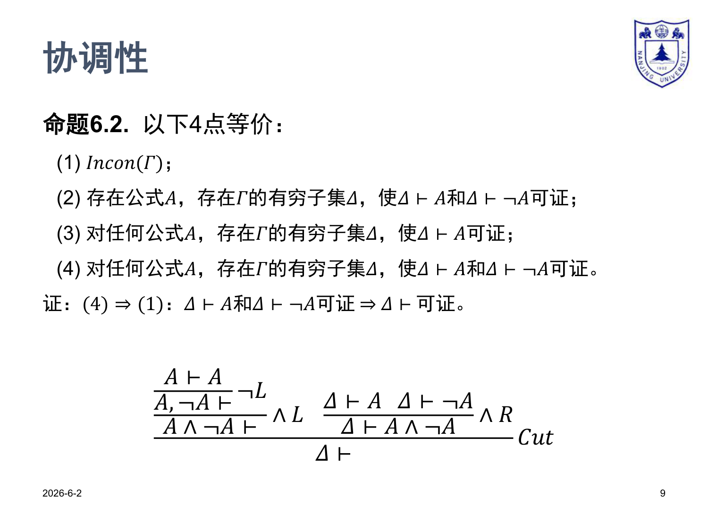
最后一步：回到起点 (1)
已知 (4)：对任意 A，Δ⊢A 且 Δ⊢¬A 都可证。要得 (1)：Incon(Γ)，即 Δ⊢（空）可证。页面这棵树同时用上 ¬L、∧L、∧R、Cut，是本组最完整的一棵：
————— ¬L Δ⊢A Δ⊢¬A
A, ¬A ⊢ ————————— ∧R
—————— ∧L Δ ⊢ A∧¬A
A∧¬A ⊢
——————————————————— Cut
Δ ⊢
- 左支：从公理
A⊢A用¬L（否定左规则：把右边的 A 翻到左边变成 ¬A）得A,¬A⊢，再用∧L合并成A∧¬A ⊢。这一支证出「A∧¬A自相矛盾」。 - 右支：拿 (4) 给的
Δ⊢A和Δ⊢¬A，用∧R（合取右规则：两边各证一个合取支，合成合取式）得Δ ⊢ A∧¬A。这一支证出「Δ能推出A∧¬A」。 - Cut 收口：以
A∧¬A为中转，把「Δ推出它」和「它自相矛盾」一割，得Δ ⊢（空）—— 正是Incon(Γ)。环路闭合，4 个命题全部等价。□
{A,¬A}：这棵树的左支 A⊢A ⇒ A,¬A⊢ 正是它矛盾的形式证明。当初埋的伏笔在这里收掉了。命题6.3：协调 Con 的对偶 4 刻画
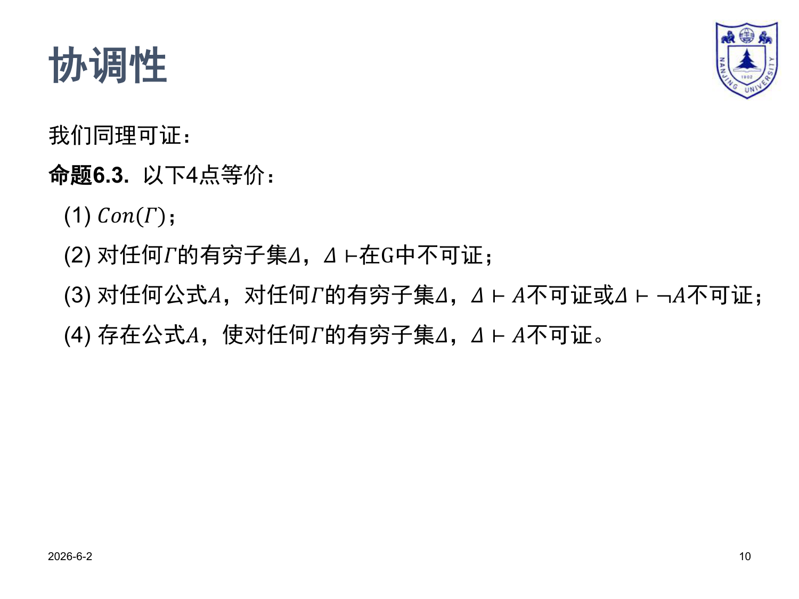
「同理可证」是什么意思
命题6.3 把命题6.2 的四条逐条取否定，就得到「协调 Con(Γ)」的等价刻画。因为 Con = ¬Incon，对 6.2 两边同时否定即可，无需重证。对照表：
| 6.2（矛盾 Incon） | 6.3（协调 Con）= 取否定 |
|---|---|
| (1) Incon(Γ) | (1) Con(Γ) |
(2) 存在 A 与 Δ，Δ⊢A 且 Δ⊢¬A 可证 | (2) 对任何有穷 Δ，Δ⊢ 不可证 |
(3) 对任何 A，Δ⊢A 可证 | (3) 对任何 A、任何有穷 Δ，Δ⊢A 不可证或 Δ⊢¬A 不可证 |
(4) 对任何 A，Δ⊢A 且 Δ⊢¬A 可证 | (4) 存在 A，使对任何有穷 Δ，Δ⊢A 不可证 |
到此「组 A · 协调性」结束：你已掌握协调 / 矛盾的定义和它们的多种等价说法。接下来进入组 B · 极大协调性，把协调集往大里撑。
背景A3：极大协调 =「塞到塞不下」的集合
接下来三页（p11–p18）围绕「极大协调（maximal consistent）」展开。这个词第一次见容易抽象，先建立一张直觉图。
直觉图：往袋子里塞公式
把公式集 Γ 想成一个袋子，里面装着一些公式，且保持协调（不打架、推不出矛盾）。现在你不断往里塞新公式，规则是：每塞一条都不能破坏协调性。
- 能塞的就塞进去；会导致矛盾的就跳过。
- 一直塞，塞到再也塞不进任何一条新公式（任何还没进袋的公式，一塞就矛盾）。
- 这个「满到极限、再加任何一条都会爆」的协调集，就叫极大协调集。
Con(Γ)，且任何协调集 Δ 只要包含 Γ，就必有 Γ=Δ（你已经到顶，没有更大的协调集能套住你）。为什么要费劲构造这种集合？
因为极大协调集「信息完整」：对每一个公式 A，它要么含 A、要么含 ¬A，绝不含糊（这正是 p16 命题6.6 的「完备性」）。这种「对一切命题都表了态」的集合，恰好能当成一个模型的蓝图——把「A 在集合里」读成「A 为真」，就读出了一个解释。这是第 3 步造模型的关键砖块。本段先把它的性质摸清，模型留待后续段落。
定义6.4：极大协调（maximal consistent）
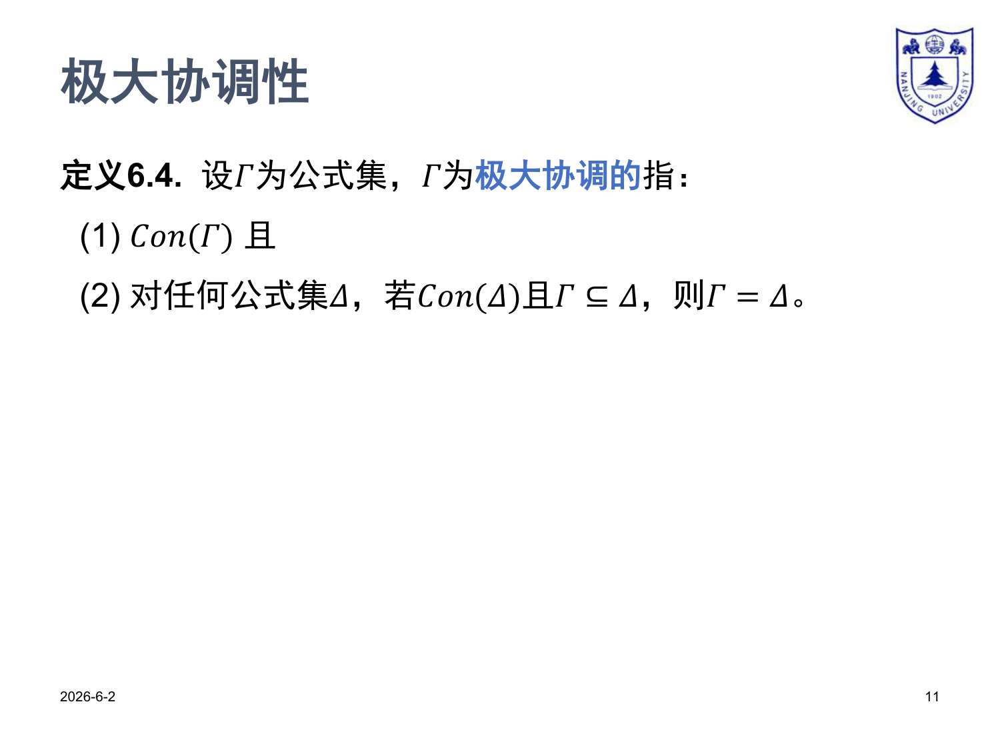
正式定义
Γ 为极大协调的（maximal consistent），指同时满足：
- (1)
Con(Γ)：Γ 本身协调；且 - (2) 对任何公式集
Δ，若Con(Δ)且Γ ⊆ Δ，则Γ = Δ。
命题6.5：极大协调的逐条判据（陈述）
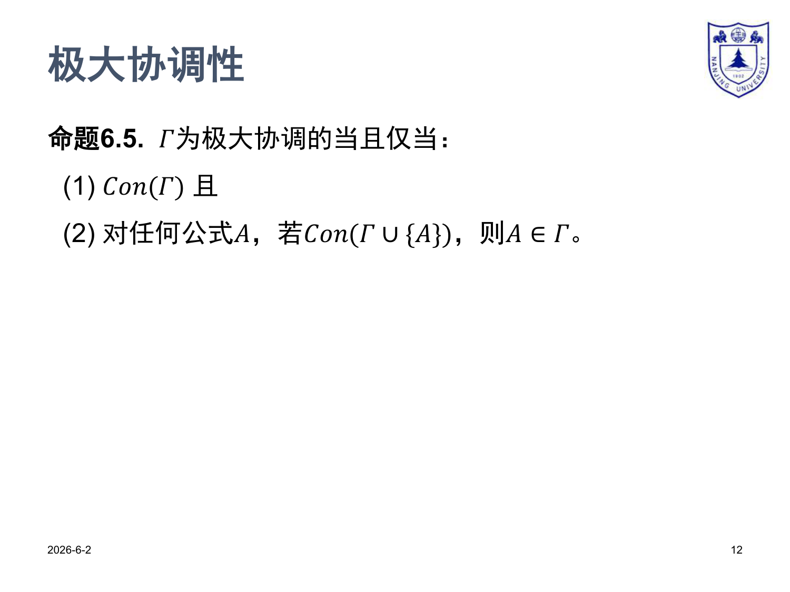
把「比集合」换成「比单条公式」
命题6.5：Γ 为极大协调 当且仅当：
- (1)
Con(Γ)；且 - (2) 对任何公式 A，若
Con(Γ ∪ {A})，则A ∈ Γ。
这页只给陈述。证明分 ⇒（p14）和 ⇐（p15）两半，p13 先把定义6.4 调出来贴在一起方便对照。
命题6.5：与定义6.4 并排对照
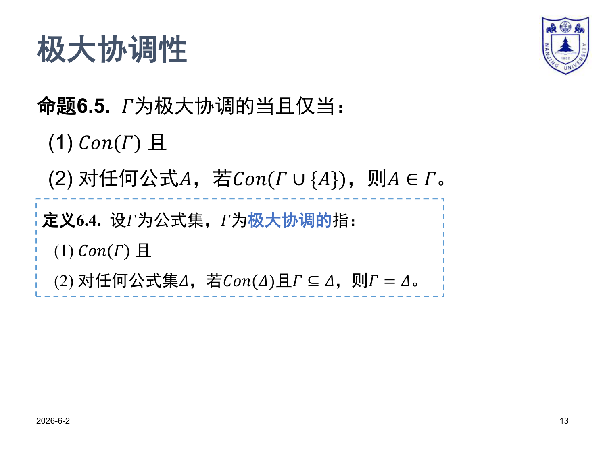
为什么把定义贴出来
本页把定义6.4（极大协调的原始定义，比集合）用虚线框调出来，摆在命题6.5（逐条判据，比单条公式）下方。这是讲义的体贴排版：接下来 p14/p15 要证「6.4 ⇔ 6.5」，证明里会频繁在两个版本间来回引用，并排放着方便随时对照。
· 定义6.4 (2)：「任何协调超集 Δ ⊇ Γ 都等于 Γ」—— 整体视角；
· 命题6.5 (2)：「任何能协调加入的单条 A 都已在 Γ」—— 逐点视角。
两者等价的直觉：一个集合若每一条「能加的」都已加了，它当然没法再被更大的协调集真包含；反之亦然。下面两页把这个直觉做实。
命题6.5 证明：⇒ 方向
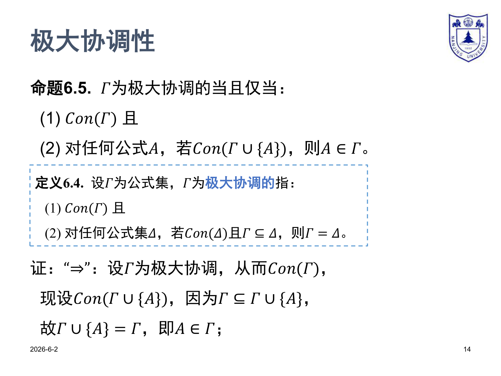
⇒：设 Γ 极大协调，证逐条判据成立
要证：若 Con(Γ∪{A})，则 A∈Γ。推理链（页面三行）：
- Γ 极大协调 ⇒ 首先
Con(Γ)（判据的 (1) 直接拿到）。 - 现设
Con(Γ∪{A})。注意Γ ⊆ Γ∪{A}（加一条 A 后的集合当然包含原 Γ），且这个超集协调。 - 套定义6.4 的 (2)（协调超集必等于自己）⇒
Γ∪{A} = Γ⇒A ∈ Γ。✓
Γ∪{A}」看成定义6.4 里那个「协调超集 Δ」。极大性逼它等于 Γ，于是新加的 A 只能本来就在 Γ 里。逐条判据其实是定义里「比集合」在「单条扩张」这个特例上的直接推论。命题6.5 证明：⇐ 方向
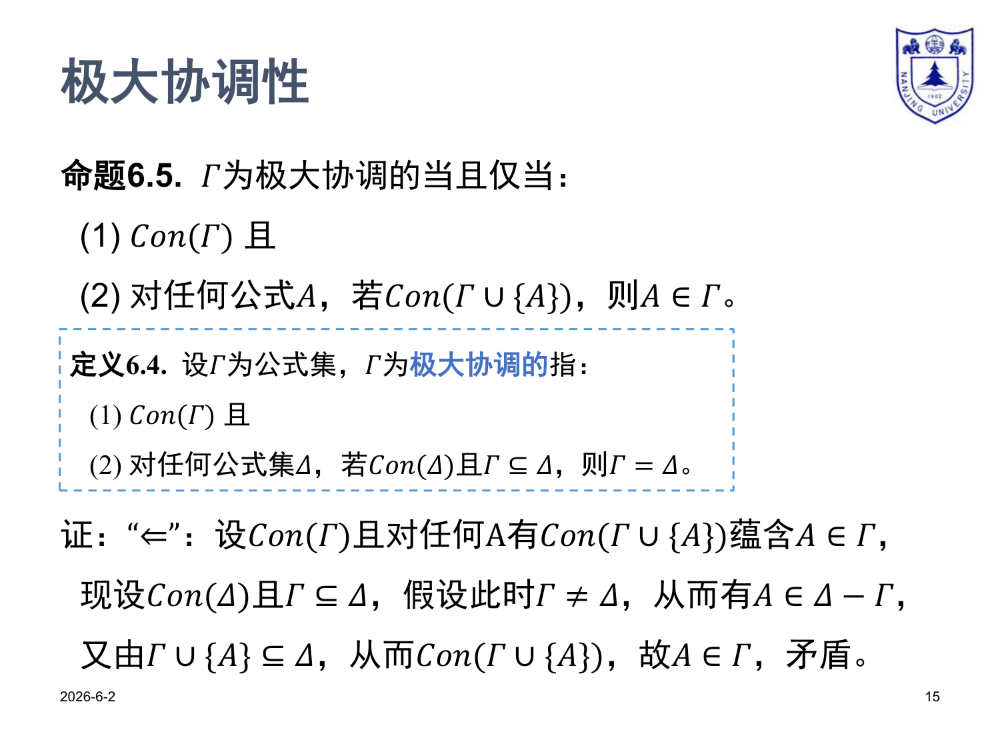
⇐：设逐条判据成立，证 Γ 极大协调
已知 Con(Γ)，且「对任何 A，Con(Γ∪{A}) ⇒ A∈Γ」。要证 Γ 满足定义6.4，即任何协调超集都等于自己。用反证法：
- 设
Con(Δ)且Γ ⊆ Δ，假设 Γ ≠ Δ（即真包含），那就存在某A ∈ Δ − Γ（Δ 里有、Γ 里没有的一条）。 - 因为
Γ∪{A} ⊆ Δ，而 Δ 协调，协调集的子集仍协调，故Con(Γ∪{A})。 - 套逐条判据 ⇒
A∈Γ。但我们选的 A 是「Δ 里有、Γ 里没有」的，A∉Γ—— 矛盾！ - 故假设不成立，
Γ=Δ，定义6.4 满足。✓
命题6.6：完备性判据 · ⇒ 方向
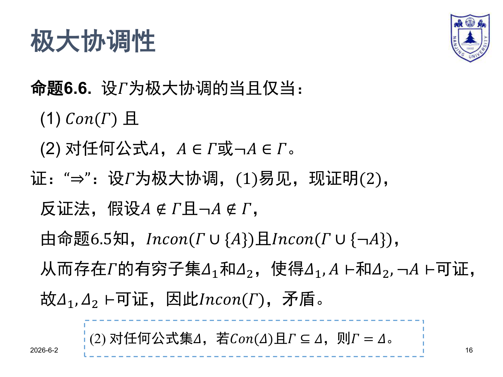
最锋利的判据登场
命题6.6：Γ 为极大协调 当且仅当：
- (1)
Con(Γ)；且 - (2) 对任何公式 A，
A∈Γ或¬A∈Γ。
⇒ 证明（反证法）
- 设 Γ 极大协调。(1) 易见。证 (2)：假设有 A 使
A∉Γ且¬A∉Γ（两头空）。 - 由命题6.5（逆否用）：A 不在 Γ 里 ⇒
Incon(Γ∪{A})；同理Incon(Γ∪{¬A})。（两个都加不进去，因为加进去会矛盾） - 于是存在 Γ 的有穷子集
Δ1, Δ2，使Δ1,A ⊢和Δ2,¬A ⊢都可证。 - 两者拼起来（A 与 ¬A 各自导致矛盾，合并消去 A）⇒
Δ1,Δ2 ⊢可证 ⇒Incon(Γ)—— 与 Γ 协调矛盾。
命题6.6：完备性判据 · ⇐ 方向
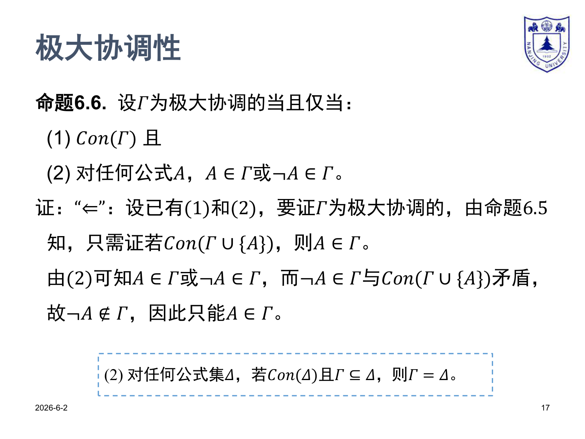
⇐：由「协调 + 每个 A 表态」推出极大协调
已知 (1) Con(Γ) 和 (2)「对任何 A，A∈Γ 或 ¬A∈Γ」。要证 Γ 极大协调。借命题6.5，只需证：若 Con(Γ∪{A})，则 A∈Γ。推理：
- 由 (2)，
A∈Γ或¬A∈Γ，二者必居其一。 - 但「
¬A∈Γ」和「Con(Γ∪{A})」打架：若 ¬A 已在 Γ 里，那Γ∪{A}就同时含 A 和 ¬A，必矛盾，违反前提Con(Γ∪{A})。 - 故
¬A∉Γ，由 (1) 那个「或」只能落在A∈Γ这边。✓
命题6.7：极大协调集 = 自己的演绎闭包
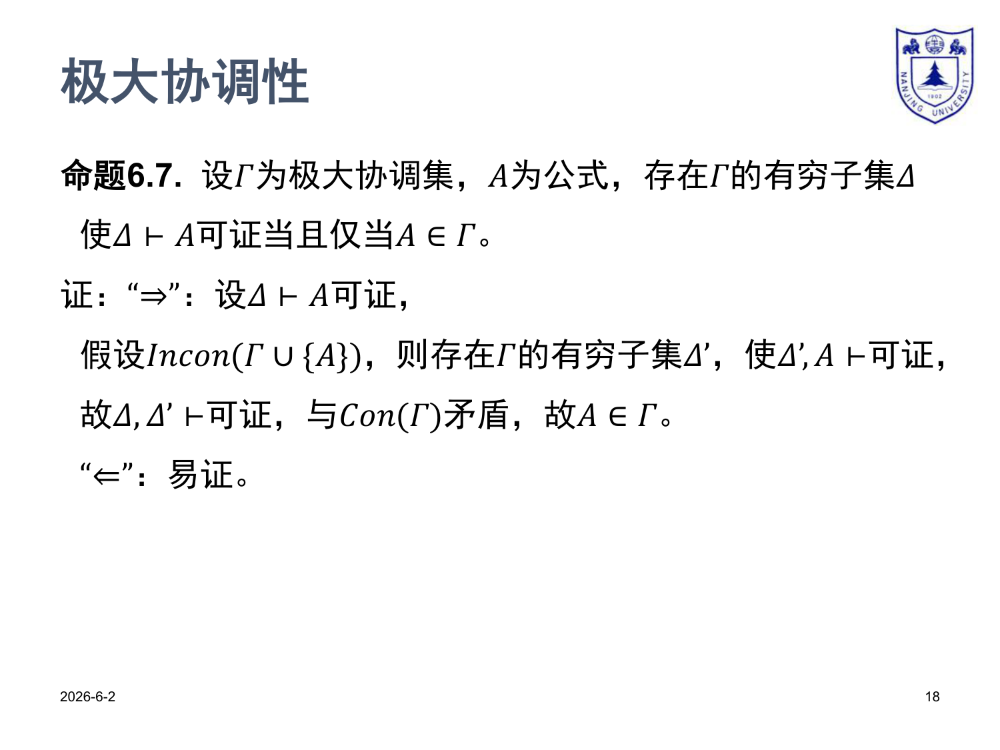
这条性质说什么
命题6.7：设 Γ 极大协调，A 为公式，则——存在 Γ 的有穷子集 Δ 使 Δ⊢A 可证 ⇔ A∈Γ。
⇒ 证明（反证）
- 设
Δ⊢A可证。假设A∉Γ，由命题6.6/6.5 知Incon(Γ∪{A})，即有有穷Δ′⊆Γ使Δ′,A ⊢可证。 - 手上同时有
Δ⊢A（A 能被证）和Δ′,A⊢（有了 A 就矛盾），Cut 掉 A ⇒Δ,Δ′ ⊢可证 ⇒Incon(Γ)—— 与Con(Γ)矛盾。故A∈Γ。 - ⇐：若
A∈Γ，取Δ={A}，则A⊢A即证（易证）。
背景A4：语义侧补课 —— ⊨、可满足、模型 (M,σ)
前面 18 页全在语法侧（只谈 ⊢、符号、证明树）。从 p19 起，第一次出现语义侧的符号 ⊨、「可满足」、「模型」。这套你还没学，这一页专门补，否则 p19 看不懂。
1 · 模型 / 解释 (M, σ) 是什么
要谈一阶公式的「真假」，得先指定它在什么世界里、变元代表谁。这两样合起来就是一个解释：
| 记号 | 英文 | 含义 |
|---|---|---|
M | structure / model | 结构（论域 + 各符号的解释）：定一个非空集合 D 当「宇宙」（所有对象），并规定每个常元指谁、每个函数怎么算、每个谓词对哪些对象成立 |
σ | assignment | 赋值（变元 → 论域中的对象）：给自由变元 x、y… 各指派 D 里一个具体对象 |
(M, σ) | — | 结构配赋值，凑成一个完整解释，每个公式在它下面有确定真假 |
M 是「游戏世界的设定」（有哪些角色、技能怎么生效），σ 是「把剧本里的代号 x、y 具体指给哪个角色」。两者齐了，剧本（公式）的每句话就有了确定的真 / 假。2 · M ⊨σ A：满足关系
读作「在结构 M、赋值 σ 下，公式 A 为真」，也说「(M,σ) 满足 A」。⊨（双横线）是语义符号，和语法的 ⊢（单横线 turnstile）长得像但意思天差地别，务必分清：⊢ 谈「能不能证」，⊨ 谈「是不是真」。把记号推广到公式集：M ⊨σ Γ 表示 Γ 里每条公式在 (M,σ) 下都真。
3 · 可满足（satisfiable）
公式集 Γ 可满足（satisfiable），指存在某个解释 (M,σ) 使 M ⊨σ Γ——即「Γ 有模型，能在某个世界里同时为真」。不可满足 = 没有任何世界能让它们全真。
· 语法侧：
⊢（可证）、协调 Con（推不出矛盾）、矛盾 Incon；· 语义侧：
⊨（为真）、可满足（有模型）、不可满足（无模型）。完全性定理的灵魂就是把这两列挂钩。p19 的命题6.8 搭第一根桥：「可满足 ⇒ 协调」。
4 · 可靠性定理（Soundness Theorem）—— p19 要用的引理
p19 证明里会引用可靠性定理：凡是能证的都为真，即 Δ⊢A ⇒ Δ⊨A。它是完全性的「反方向」，本讲默认已学 / 已证，当现成工具用。直觉：G 系统的每条规则都「保真」，所以从真前提按规则推出的结论必真。
命题6.8：可满足 ⇒ 协调
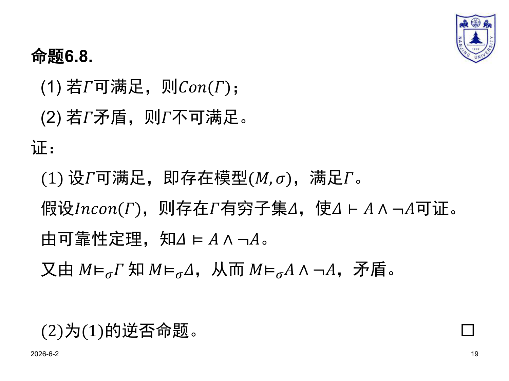
命题内容
- (1) 若 Γ 可满足，则
Con(Γ)。（有模型 ⇒ 协调） - (2) 若 Γ 矛盾，则 Γ 不可满足。（(1) 的逆否命题，免证）
(1) 的证明（反证 + 可靠性定理）
- 设 Γ 可满足，即存在模型 (M,σ) 满足 Γ（
M⊨σΓ）。 - 假设
Incon(Γ)，则有有穷子集 Δ 使Δ ⊢ A∧¬A可证（用矛盾推出一个明显假的合取式）。 - 由可靠性定理（背景A4 第 4 点：能证 ⇒ 为真）⇒
Δ ⊨ A∧¬A（语义上 Δ 蕴含这个矛盾式）。 - 又因
M⊨σΓ且Δ⊆Γ，故M⊨σΔ（模型满足全集，自然满足子集）⇒M⊨σ A∧¬A。 - 但「A 且 ¬A」在任何解释下都为假（A 真则 ¬A 假，合取必假）—— 矛盾！故假设不成立，
Con(Γ)。✓
(2) 是 (1) 的逆否（「可满足⇒协调」取逆否即「矛盾⇒不可满足」），逻辑等价，无需另证。
⊨⇒⊢」那半边的奠基。Henkin 路线要靠「协调集必有模型」（后续段落证），而本命题给出反向保证「有模型必协调」，两者夹住，才把「协调」和「可满足」彻底划等号。命题6.9：协调集如何安全扩张
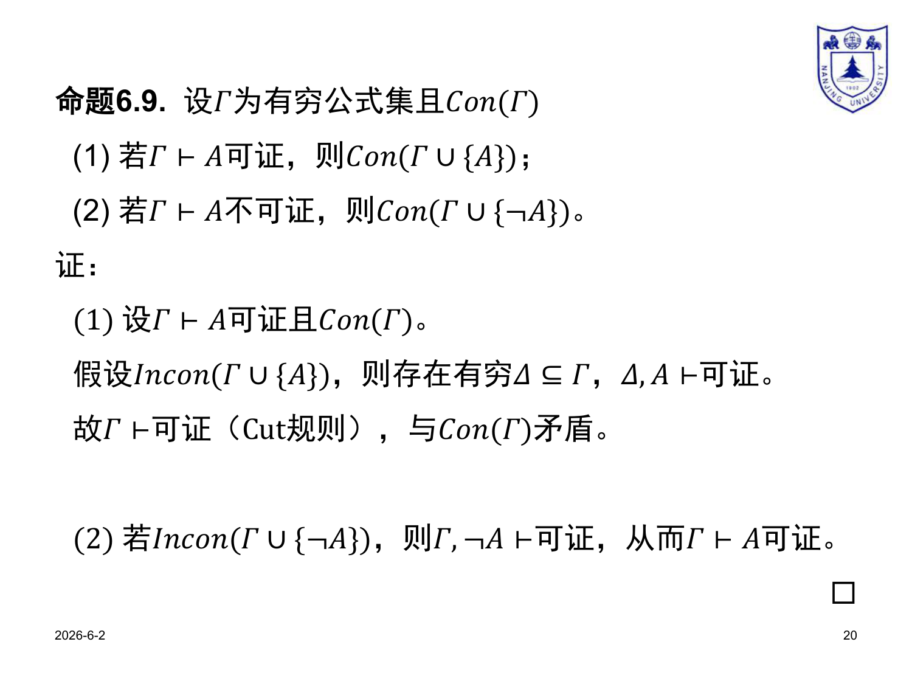
命题内容
设 Γ 为有穷公式集且 Con(Γ)：
- (1) 若
Γ⊢A可证，则Con(Γ∪{A})。（能证出的 A，加进来仍协调） - (2) 若
Γ⊢A不可证，则Con(Γ∪{¬A})。（证不出的 A，把 ¬A 加进来仍协调）
(1) 证明（反证 + Cut）
- 设
Γ⊢A可证且Con(Γ)。假设Incon(Γ∪{A})，则有有穷Δ⊆Γ使Δ,A ⊢可证。 - Cut 掉 A：左有
Γ⊢A、右有Δ,A⊢⇒Γ⊢可证 ⇒Incon(Γ)—— 与Con(Γ)矛盾。故Con(Γ∪{A})。✓
(2) 证明
若 Incon(Γ∪{¬A})，则 Γ,¬A ⊢ 可证，由此（否定规则）反推出 Γ⊢A 可证 —— 与「Γ⊢A 不可证」前提矛盾。故加 ¬A 后仍协调。✓
A₁, A₂, A₃, …，从协调的 Γ 出发，逐条用命题6.9 决定「纳入 Aₙ 还是纳入 ¬Aₙ」，得到一条递增的协调集链，取并集就得到一个极大协调集。本命题6.9 就是这台机器每一步的「安全阀」。到此本段（p2–p20）结束：协调性 + 极大协调性的全部主体已就位，模型构造与完全性收口留给后续段落。为什么要专门搞一个「等词 ≐」？
新名词：等词（equality，符号 ≐，读作"等于"）。它是写在两个项之间的一个二元谓词，s ≐ t 的意思是"项 s 和项 t 指的是同一个个体"。本讲（南大数理逻辑第11讲）从这一页起，把它正式加进一阶逻辑。
它和"普通谓词"差在哪？——这是整段的动机
在前一讲的 G 系统里，你见过的谓词都是普通谓词，比如 p(x)、R(x,y)。普通谓词的语义完全由模型自己规定：模型说 R(a,b) 成立就成立，逻辑系统对它没有任何"内置脾气"。
等词不一样。我们想让 ≐ 永远表达"真正的相等"，而真正的相等天生带着三条铁律，不管在哪个模型里都必须成立：
- 自反：任何东西都等于它自己 —
s ≐ s。 - 可替换（函数同余）：相等的输入，喂给同一个函数，输出也相等 — 若
s ≐ t则f(s) ≐ f(t)。 - 可替换（谓词同余）：相等的东西，在任何性质上表现一致 — 若
s ≐ t且p(s)成立，则p(t)也成立。
≐ 当成又一个 p 来处理 — 必须把这三条铁律显式写进证明系统，否则系统就证不出"相等该有的行为"。为什么前一讲的 G 没有它？
前一讲 G 系统证明的是"纯逻辑有效"的东西（量词、连接词的规律）。等词是一个额外的、带语义承诺的符号，把它加进来会改变"什么算公理"。所以课程的策略是：先把不含等词的 G 讲透，再单独开一讲，把等词作为"附加公理"叠上去，得到新系统 Ge。这就是 p21 第一句"在以前给出的 G 系统中，没有出现等词"的来历。
这一段（p21–34）要干的两件事
- D 组（p21–27）：把 Ge 定义出来（=G + 3 条等词公理），并演示它能证出"相等该有的全部性质"（对称、传递、同余……），重点用一棵证明树教你怎么自底向上读/造证明树。
- E 组（p28–34）：证一个关键技术结论 — 在 Ge 里能证的东西，等价于"把那 3 条公理当成普通前提 Γe 摆进来后，在老的 G 系统里能证"。这一步把"带等词的新系统"归约回"不带等词的老系统"，为最后的可靠性与完全性铺路（p34）。
定义 6.10：Ge = G + 3 条等词公理
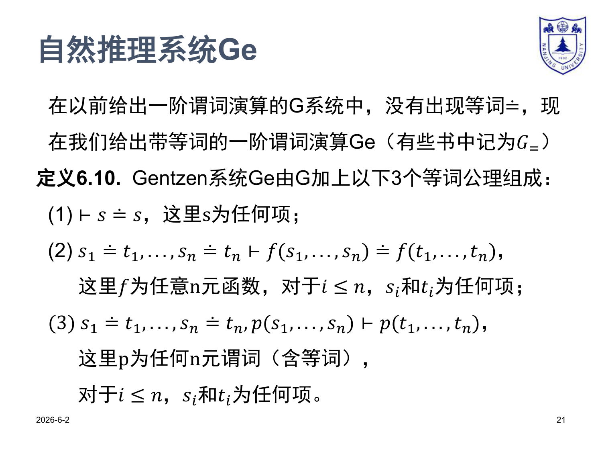
先认名字
| 符号 | 英文全称 | 中文含义 |
|---|---|---|
Ge / G= | G with equality | 带等词的一阶谓词演算（Gentzen 系统 G 叠加等词公理） |
≐ | equality | 等词，"两项指同一个体" |
这页一句话：Ge 就是老的 G 系统，外加下面 3 条等词公理。注意"公理"在 Gentzen 系统里指无需前提就直接可写的矢列（出现在证明树最顶端的叶子）。
逐条读这 3 条公理
(1) 自反 — ⊢ s ≐ s
"任何项 s 都等于它自己"。左边空（无前提），右边一个等式，直接成立。
(2) 函数同余 — s₁≐t₁, …, sₙ≐tₙ ⊢ f(s₁,…,sₙ) ≐ f(t₁,…,tₙ)
"如果各个对应位置的输入相等，那么把它们喂给同一个 n 元函数 f，得到的结果也相等"。这是相等的"对函数封闭"性质。f 是任意 n 元函数，每对 sᵢ, tᵢ 是任意项。
(3) 谓词同余 — s₁≐t₁, …, sₙ≐tₙ, p(s₁,…,sₙ) ⊢ p(t₁,…,tₙ)
"如果各位置输入相等，且谓词 p 对 s 成立，那么 p 对 t 也成立"。这是相等的"性质不可分辨"。原文特别强调 p 可以是任何 n 元谓词（含等词本身） — 这一点很关键，后面证传递性时要拿 p 取作 ≐。
p 允许就是 ≐，于是 (3) 一口气也覆盖了"等式之间互相替换"，这是证对称/传递的弹药。约定 6.11：矢量记法（一次写一串）
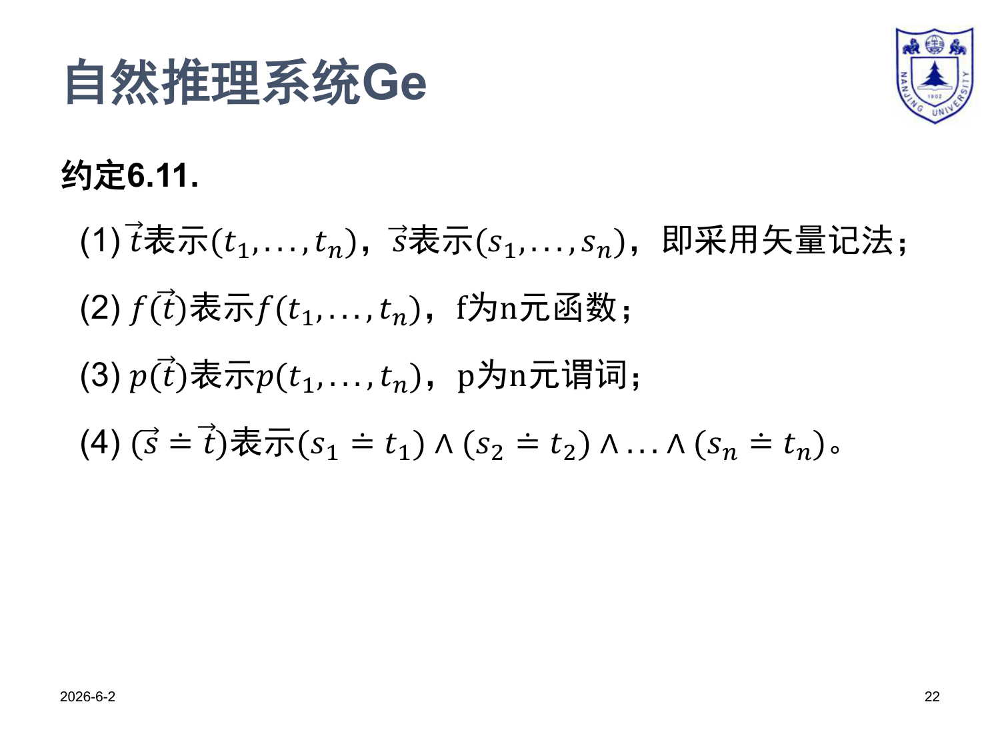
这页只是"省字记号"，但很重要
新名词：矢量记法（vector notation，箭头记号）。它不是新概念，只是把"一长串项"打包成一个带箭头的字母，免得每次都写一长排下标。
| 写法 | 展开 | 读法 |
|---|---|---|
⃗t | (t₁, …, tₙ) | 一串项 |
⃗s | (s₁, …, sₙ) | 另一串项 |
f(⃗t) | f(t₁, …, tₙ) | 把这串项喂给 n 元函数 f |
p(⃗t) | p(t₁, …, tₙ) | n 元谓词 p 作用在这串项上 |
(⃗s ≐ ⃗t) | (s₁≐t₁) ∧ (s₂≐t₂) ∧ … ∧ (sₙ≐tₙ) | 两串"逐位相等"再用 ∧ 连成一个公式 |
⃗s ≐ ⃗t 不是"一个等式"，而是 n 个等式用合取 ∧ 串起来的一整个公式。后面命题6.12(4)(5) 里 (⃗s ≐ ⃗t) → … 的左件就是这一大坨合取，读的时候要展开成"每一位都相等"。⃗s ≐ ⃗t ⊢ f(⃗s) ≐ f(⃗t)。p28 的归约定理里 Γe 的写法也全靠它。命题 6.12：相等"该有的性质"都能证出来
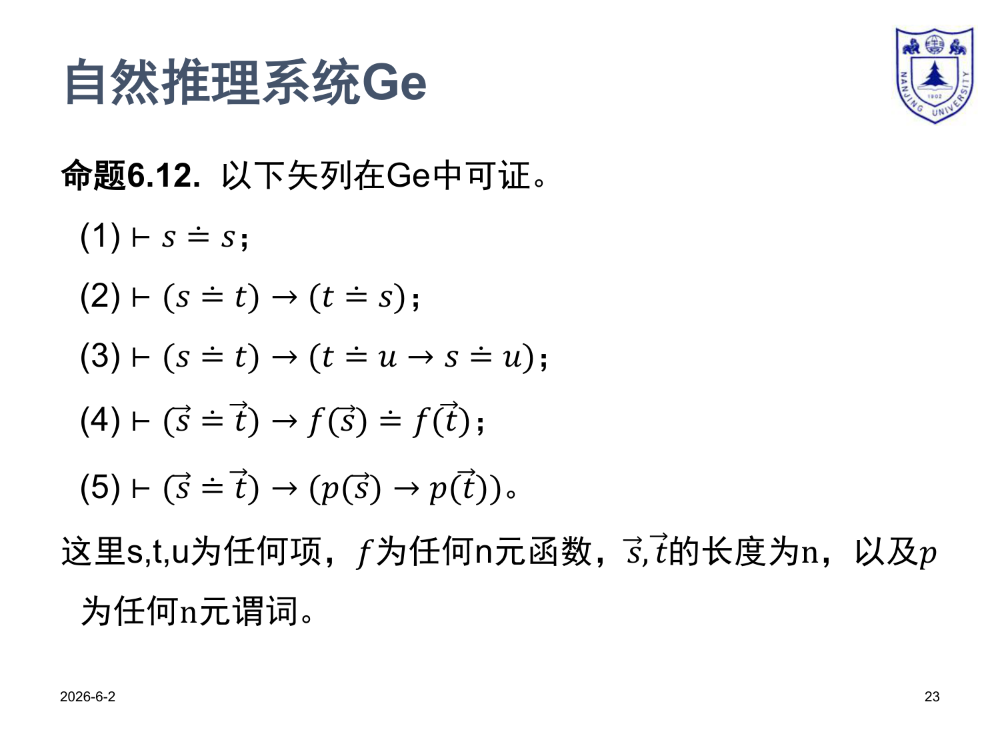
这页在宣告什么
p21 只给了 3 条公理（自反 + 两条同余）。但我们直觉里"相等"还应该有对称（a=b 则 b=a）和传递（a=b 且 b=c 则 a=c）。命题6.12 说：这些不用另加公理，在 Ge 里都能证。逐条看：
| 编号 | 矢列 | 它是相等的什么性质 |
|---|---|---|
| (1) | ⊢ s ≐ s | 自反（其实就是公理(1)） |
| (2) | ⊢ (s≐t) → (t≐s) | 对称 |
| (3) | ⊢ (s≐t) → (t≐u → s≐u) | 传递 |
| (4) | ⊢ (⃗s ≐ ⃗t) → f(⃗s) ≐ f(⃗t) | 函数同余的"蕴含版" |
| (5) | ⊢ (⃗s ≐ ⃗t) → (p(⃗s) → p(⃗t)) | 谓词同余的"蕴含版" |
⊢ 左边（作为假设）；这里(4)(5) 把它搬到右边变成 → 的左件，即"内化"成一个蕴含式。两者靠 →R 规则互相转化 — 这正是下一页证明树要演示的招式。末行的小字"s,t,u 为任何项，f 为任何 n 元函数，⃗s,⃗t 长度为 n，p 为任何 n 元谓词" — 就是说这些结论对所有项/函数/谓词都成立，是 schema（模式）。
命题 6.12(2) 证明示范 — 一棵证明树的"分步动画"
目标
第 1 步（p24）：先用 →R 把蕴含拆掉
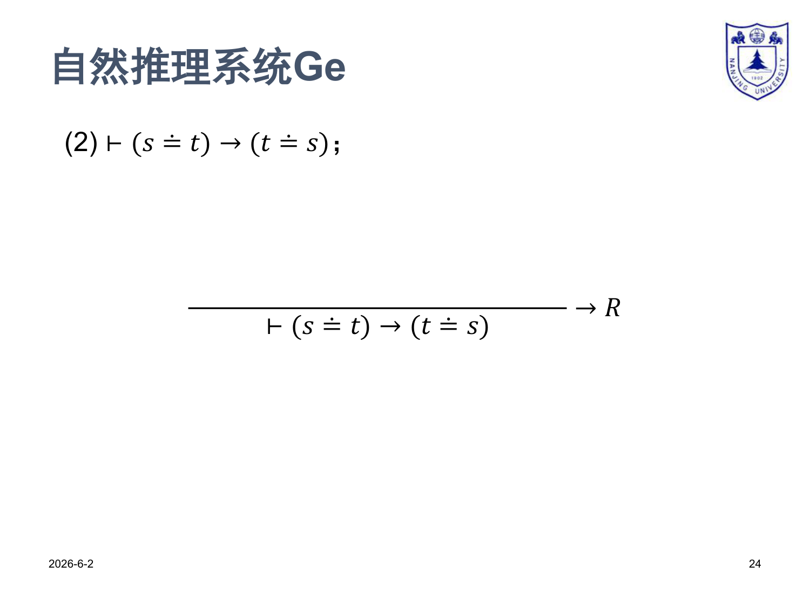
最下面是目标 ⊢ (s≐t) → (t≐s)。它的主连接词是 →，在右边（succedent），所以用 →R（右蕴含规则，implication-right）。
A → B，只需把 A 挪到左边当假设，去证 A ⊢ B。即 A ⊢ B ⟹ ⊢ A→B。所以横线上方"应该"出现 s≐t ⊢ t≐s — 但 p24 故意先留空，只画出横线和 →R 标签，让你自己想"上面该填什么"。
第 2 步（p25）：补上 →R 上方的子目标，并标出下一招 Cut
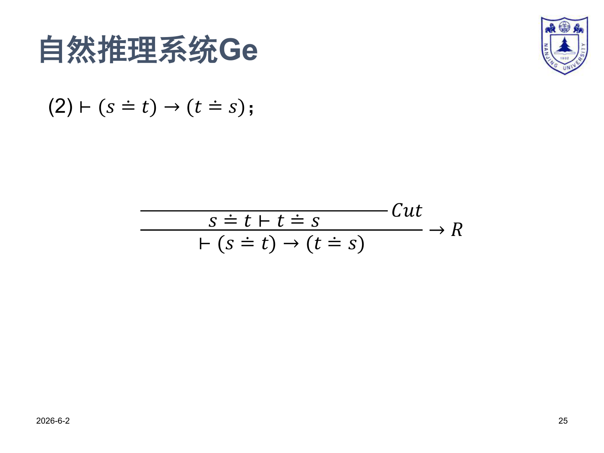
现在上方填好了：s ≐ t ⊢ t ≐ s。这就是脱掉蕴含后真正要证的核心矢列："假设 s=t，证 t=s"。
它头顶又标了一条 Cut（割规则）。回忆：Cut 允许引入一个"中间命题" C — 若能证 Γ ⊢ C 且 C, Γ ⊢ Δ，就能拼出 Γ ⊢ Δ。这里要引入的中间命题是 s ≐ s（自反，一个我们手里有的公理）。
s≐s？因为对称性的证明本质是："由 s=t 和 s=s，用谓词同余把第二个等式里的一个 s 替换成 t，得到 t=s"。那个 s≐s 是替换的"原料"，凭空不在前提里，所以用 Cut 把它请进来。第 3 步（p26）：展开 Cut 的两个分支
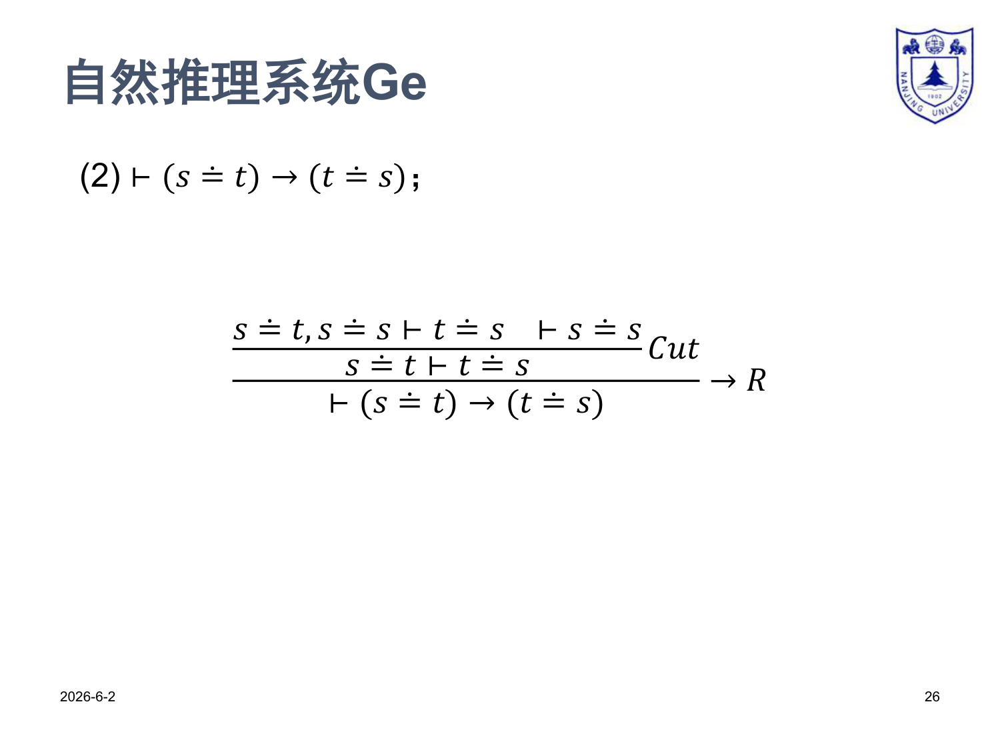
Cut 把 s≐t ⊢ t≐s 劈成左右两个上分支：
- 右分支
⊢ s ≐ s：就是公理(1) 自反，直接是叶子，封顶。 - 左分支
s ≐ t, s ≐ s ⊢ t ≐ s：把刚 Cut 进来的s≐s加进左边假设后，要证t≐s。
第 4 步（p27）：左分支再往上 — 落到谓词同余公理
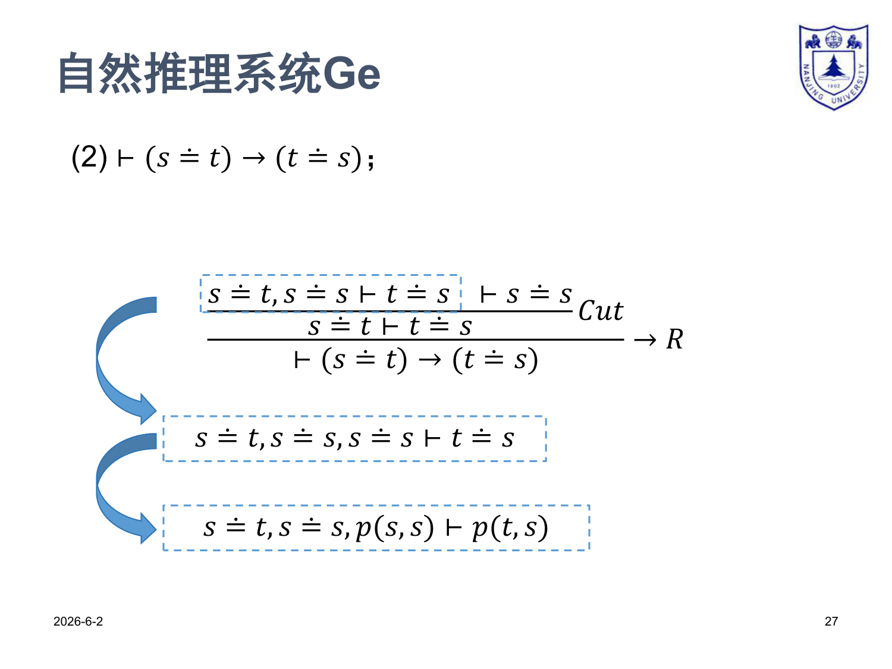
p27 用蓝色虚线框把"左分支怎么继续"拆给你看，分两跳：
- 左分支
s≐t, s≐s ⊢ t≐s，通过结构规则（加一个重复的假设s≐s，即弱化/收缩之类）整理成s≐t, s≐s, s≐s ⊢ t≐s。 - 再认出它正是谓词同余公理(3)的一个实例：取谓词
p为≐本身，写成s≐t, s≐s, p(s,s) ⊢ p(t,s)。这里p(s,s)就是s≐s，p(t,s)就是t≐s— 替换"第一个参数 s→t"，正好把s≐s变成t≐s。
≐ 当作可替换的谓词。→R 脱蕴含 → Cut 请进 s≐s（右分支=自反公理封顶）→ 左分支整理 → 命中谓词同余公理封顶。所有叶子都是 Ge 公理，证毕。你以后造证明树就是这套：看主连接词选规则、缺原料用 Cut、最后逼到公理。结构归纳法：把数学归纳推广到"证明树"上
新名词：结构归纳（structural induction，结构归纳法）。你已经会数学归纳法（对自然数 n：先证 n=0，再证"n 成立 ⟹ n+1 成立"）。结构归纳是它的推广 — 不再对"数字"归纳，而是对"按规则一层层搭起来的结构"归纳。证明树正是这种结构。
证明树是怎么"搭"出来的
- 最小情形（叶子）：一个公理矢列，自己就是一棵（高度 0 的）证明树。
- 搭建方式（内节点）：拿一条规则，把已有的 1 棵或 2 棵小证明树接在它上方，规则下方的结论就成了新树的根。
规则按"上方有几棵子树"分两类，这正是 p33 反复出现的 R₁ / R₂：
| 类 | 形状 | 含义 | 例子 |
|---|---|---|---|
| R₁ | Γ₁⊢Δ₁ / Γ⊢Δ | 一前提规则（上方 1 棵子树） | →R, ∀L, ∀R … |
| R₂ | Γ₁⊢Δ₁ Γ₂⊢Δ₂ / Γ⊢Δ | 两前提规则（上方 2 棵子树） | ∧R, →L, Cut … |
结构归纳怎么用
要证"所有证明树都有性质 P"，只需：
- 归纳基础：每个公理（叶子）都有 P；
- 归纳步骤：假设上方的子树都有 P（这叫归纳假设），证明用一条规则接出来的新树也有 P — R₁ 和 R₂ 两种形状各验一遍。
两步齐了，就能断言任何证明树（不管多高）都有 P。p28 的命题6.13 要证的 P 是："这棵 Ge 证明树能翻译成一棵 G 证明树（把 Γe 摆进前提后）"，p29–33 就是按这个模板走。
命题 6.13：把等词公理"外置"成前提 — Ge ⟺ G 的归约
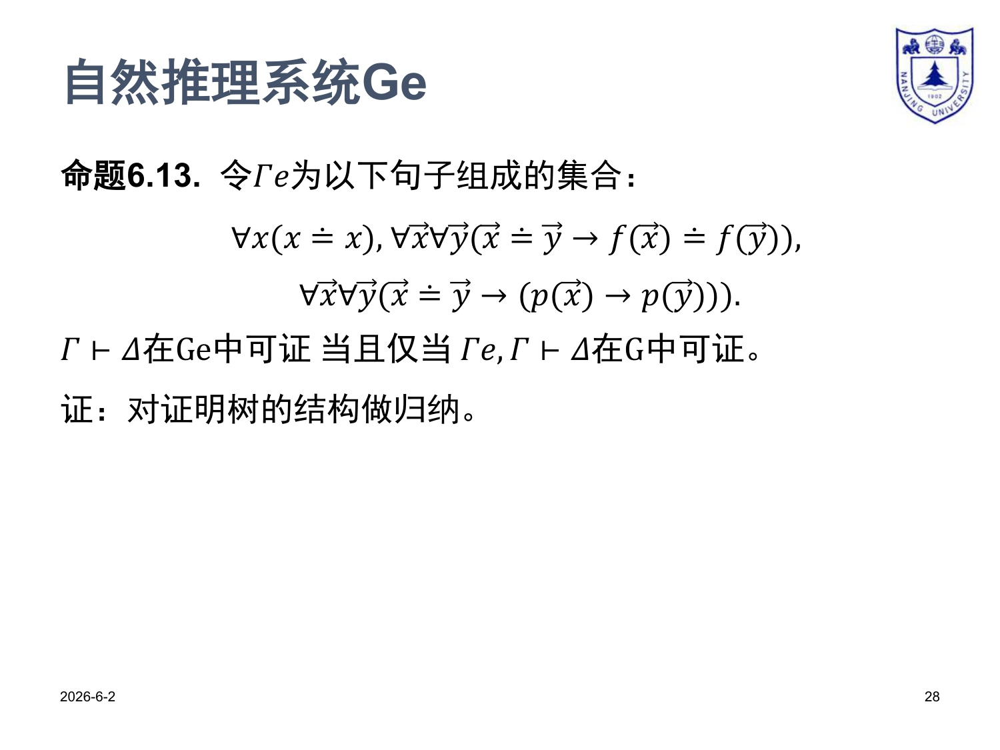
先认 Γe
| 符号 | 英文 | 含义 |
|---|---|---|
| Γe | equality axioms set | 由 3 条等词公理"全称闭包"组成的句子集合 |
这页把 p21 那 3 条等词公理，每条前面加上全称量词 ∀ 封成闭句子，打包成集合 Γe：
分别是自反 / 函数同余 / 谓词同余的全称版本。
命题主体（这段的"核心技术"）
用大白话："在带等词的新系统 Ge 里能证 Γ⊢Δ" 这件事，恰好等价于"把那 3 条等词公理 Γe 当成普通前提塞进左边后，在不带等词的老系统 G 里能证"。
证明方法，原文一句话："对证明树的结构做归纳" — 正是背景页 B1 教的那套。"⟺"是双向的，所以基础和步骤都要做两个方向（⟹ 和 ⟸）。p29–33 就是这场归纳的展开。
归纳基础（方向⟹）：Ge 的等词公理，在 G 中由 Γe 推出
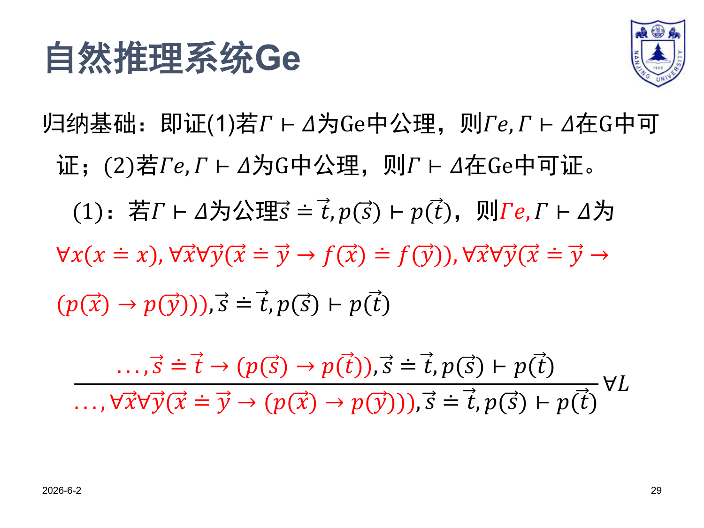
归纳基础 = 处理叶子（公理）。原文把它拆成两小问：
- (1) 若
Γ⊢Δ是 Ge 的公理 ⟹Γe, Γ⊢Δ在 G 中可证。（这页讲） - (2) 若
Γe, Γ⊢Δ是 G 的公理 ⟹Γ⊢Δ在 Ge 中可证。（下页 p30）
本页演示 (1)：拿谓词同余公理当例子
设 Ge 公理是谓词同余 ⃗s≐⃗t, p(⃗s) ⊢ p(⃗t)（红色那行就是它）。要在 G 里证它，手里有 Γe，里面有那条全称的谓词同余句 ∀⃗x∀⃗y(⃗x≐⃗y → (p(⃗x)→p(⃗y)))。
截图下半那条带 ∀L 标签的推理就是关键一跳：
∀x A(x)，可把它实例化成任意具体项的 A(t) 继续用。直觉：全称假设"对所有 x 成立"，当然对你挑的那个具体值也成立。所以：用 ∀L 把 Γe 里的全称谓词同余句，实例化成 ⃗s≐⃗t → (p(⃗s)→p(⃗t))（横线上方那行），再配合左边已有的 ⃗s≐⃗t 和 p(⃗s)，在纯 G 里就推出了 p(⃗t)。等词公理被 Γe + ∀L 顶替掉了。
归纳基础（方向⟸）：G 的公理，在 Ge 中可证
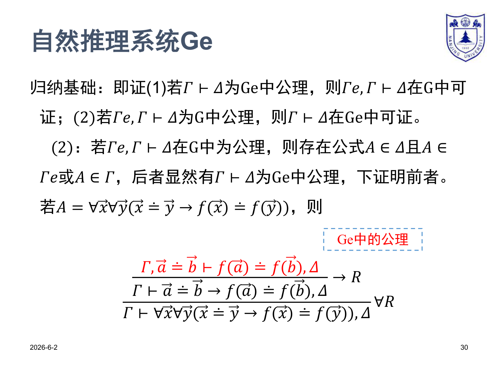
这页做基础的另一半 (2)：若 Γe, Γ ⊢ Δ 是 G 的公理，要证 Γ ⊢ Δ 在 Ge 中可证。
先做个分类
G 的公理形如"左右两边有公共公式 A"。这里有两种情况：
- A 来自 Γ（或本来就在 Δ 里）：那
Γ⊢Δ自己就是 Ge 的公理，显然成立，原文一句"后者显然"带过。 - A 来自 Γe（即公共公式是某条等词公理的全称句）：这是要费点劲的"前者"，本页详证。
详证"A 是 Γe 里的句子"— 以函数同余为例
设 A = ∀⃗x∀⃗y(⃗x≐⃗y → f(⃗x)≐f(⃗y))。要在 Ge 里把它造出来。截图那棵小树自底向上是：
- 最顶
Γ, ⃗a≐⃗b ⊢ f(⃗a)≐f(⃗b), Δ— 这正是 Ge 的函数同余公理（蓝框标注"Ge中的公理"），直接封顶； - 往下用
→R把⃗a≐⃗b收进蕴含，得Γ ⊢ ⃗a≐⃗b → f(⃗a)≐f(⃗b), Δ； - 再用
∀R（右全称，forall-right）把自由变元⃗a,⃗b全称封顶，得到Γ ⊢ ∀⃗x∀⃗y(…), Δ，即 A。
∀x A(x)，只要对一个全新的、没出现过的变元（特征变元，eigenvariable）证 A(a) 即可 — 因为"对一个任意取的、没被约束的 a 成立"就等于"对所有 x 成立"。这就是 (3) 这一跳的依据，也解释了为啥要用全新的 ⃗a,⃗b。例：一棵具体证明树的归约长什么样（∀R + →R）
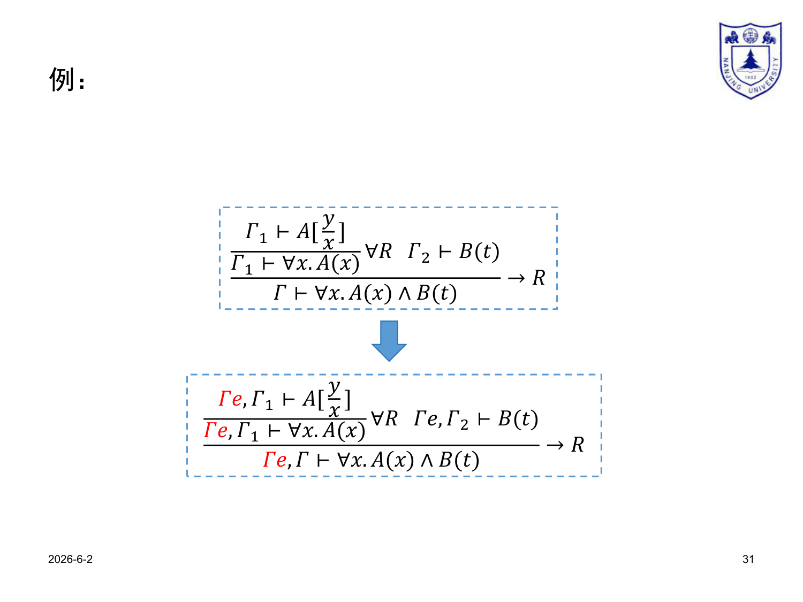
在抽象讲归纳步骤前，先看一个具体例子找感觉。上框是一棵 Ge 里的证明树，证 Γ ⊢ ∀x.A(x) ∧ B(t)，结构是：左支用 ∀R 证 ∀x.A(x)、右支证 B(t)，再合到一起。
归约动作：每个矢列左边都"添上 Γe"
下框是归约后的树 — 形状一模一样，唯一变化是每一行左边都多染红了一个 Γe：Γ₁⊢… 变 Γe,Γ₁⊢…，根从 Γ⊢… 变 Γe,Γ⊢…。规则标签（∀R、→R）原封不动。
A[y/x]：表示"把 A(x) 里的 x 替换成新变元 y"，正是 ∀R 引入特征变元的写法。塞 Γe 不会碰它，因为 Γe 是闭句子（没有自由变元），不会和特征变元的"新鲜性"冲突。例（续）：从"归纳假设"的视角再看这棵树
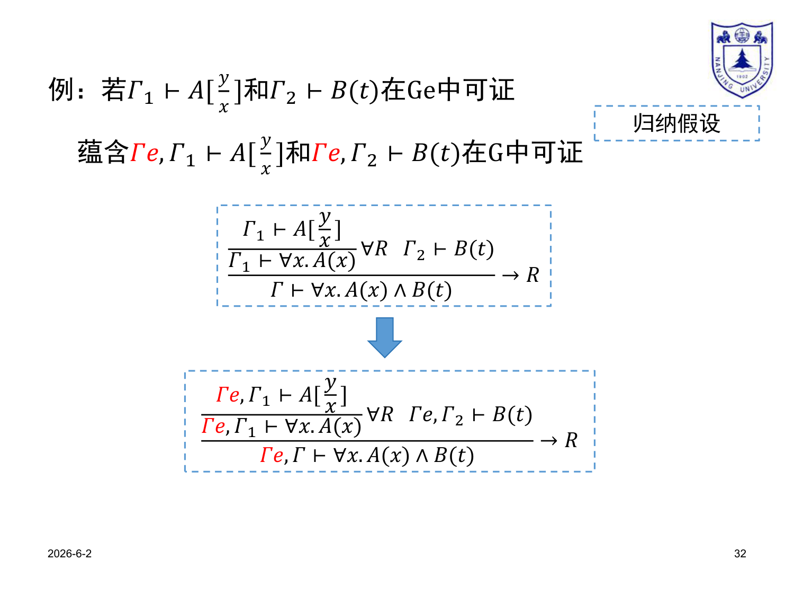
同一个例子，这页换成归纳假设的口吻讲，为下页抽象版热身。标题那句是核心：
Γ₁ ⊢ A[y/x] 和 Γ₂ ⊢ B(t) 在 Ge 中可证，蕴含 Γe,Γ₁ ⊢ A[y/x] 和 Γe,Γ₂ ⊢ B(t) 在 G 中可证。"右上角蓝框就写着"归纳假设"。把它对上背景页 B1 的模板：
- 这棵树的根由一条两前提规则（→R 之上是 ∀R 与右支，属 R₂ 形）接出；
- 归纳假设就是"假定上方两棵子树已经能归约"（即 Γ₁ 支、Γ₂ 支各自的 Ge 树都能加 Γe 翻成 G 树）；
- 要证的归纳步骤是"那么把它们用这条规则拼起来的整棵树也能归约"— 而做法就是 p31 看到的"根那行也染上 Γe"。
归纳假设 + 归纳步骤：R₁（一前提）/ R₂（两前提）两类统一处理
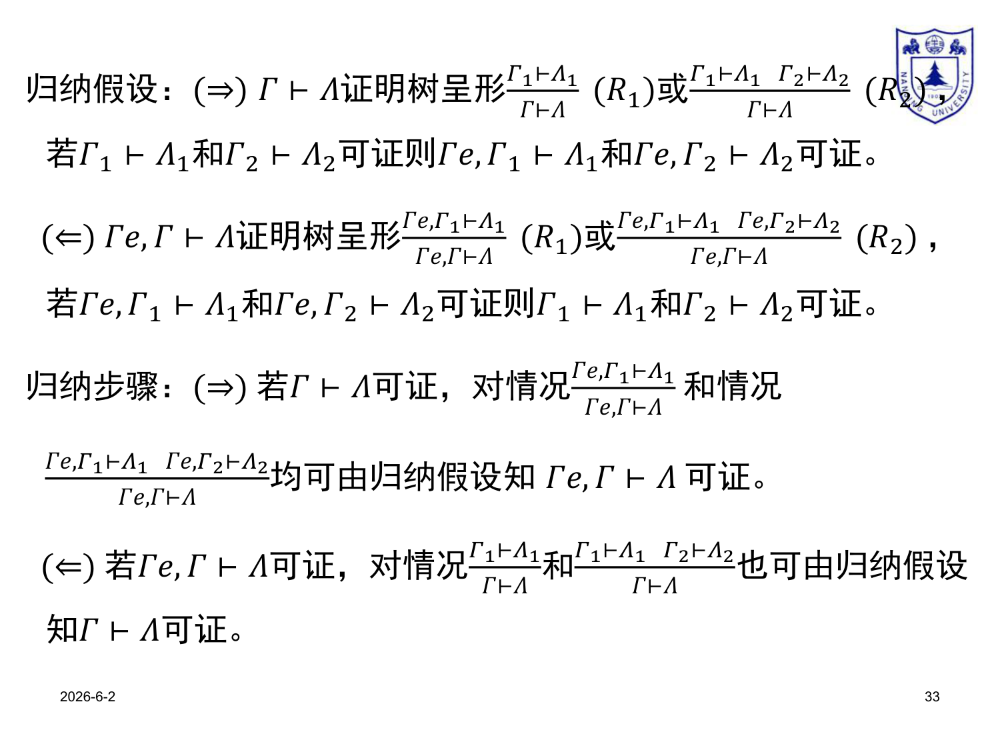
这页把上面具体例子抽象成对一切规则的统一论证。所有 G 规则按上方子树数目只有两形（见背景页 B1）：
方向 ⟹（Ge 树 → 加 Γe 的 G 树）
- 归纳假设：Ge 证明树根部呈 R₁ 或 R₂ 形；假定上方子树
Γ₁⊢Λ₁（及Γ₂⊢Λ₂）可归约，即Γe,Γ₁⊢Λ₁（及Γe,Γ₂⊢Λ₂）在 G 可证。 - 归纳步骤：那么对两种形状，把同一条规则 R₁/R₂ 作用在"已加 Γe 的子树"上，直接得
Γe,Γ⊢Λ在 G 可证。— 就是 p31 的"染红 Γe、规则不变"。
方向 ⟸（加 Γe 的 G 树 → Ge 树）
- 归纳假设：
Γe,Γ⊢Λ的 G 树呈 R₁/R₂ 形；假定子树Γe,Γ₁⊢Λ₁（及第二支）可证 ⟹Γ₁⊢Λ₁（及第二支）在 Ge 可证。 - 归纳步骤：同一条规则反向作用，得
Γ⊢Λ在 Ge 可证。— 即"把 Γe 从每行抹掉，规则照样成立"。
定理 6.14：Ge 的可靠性，与"完全性"目标登场
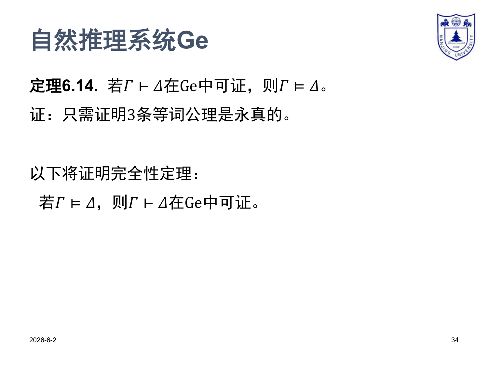
定理 6.14：可靠性（soundness）
| 名词 | 英文 | 含义 |
|---|---|---|
| 可靠性 | soundness | "证得出的，必定语义为真"— 即 ⊢ ⟹ ⊨ |
Γ ⊢ Δ 在 Ge 中可证，则 Γ ⊨ Δ。（语法可证 ⟹ 语义有效）回忆 ⊨（双横杠，语义蕴含/有效）是前段术语："凡是满足 Γ 的模型都满足 Δ"。可靠性保证 Ge 不会"瞎证"出语义为假的东西。
证明为什么"只需证 3 条等词公理永真"
原文："只需证明 3 条等词公理是永真的。"道理：老的 G 系统已经被证过是可靠的（前段结论），它的所有规则都保持"真"。Ge = G + 3 条等词公理，新增的只有那 3 条公理。所以只要补证这 3 条公理在任何模型里都永真（自反 s=s 永真、函数同余永真、谓词同余永真 — 它们正是"真正的相等"在语义上的体现），整个 Ge 的可靠性就被"G 可靠 + 新公理永真"合起来保住了。
下一段的目标：完全性（completeness）
Γ ⊨ Δ，则 Γ ⊢ Δ 在 Ge 中可证。（语义有效 ⟹ 语法可证，正好是可靠性的反方向）可靠性 + 完全性合起来，就是 ⊢ ⟺ ⊨ — "能证的恰好等于真的"，这是一阶逻辑（带等词）最核心的定理。可靠性这页已拿下；完全性更难，要靠极大协调集、模型构造等工具（前段铺垫的 Con/极大协调正是为此），留给下一段展开。
完全性证明的总地图——我们究竟要走哪条路
这一段是整讲的高潮。前两段把"证明系统"（⊢，能写出证明树）和"语义"（⊨，在模型里为真）两套东西分别讲清楚了。现在要做的，是把它们缝起来——证明完全性定理（Completeness Theorem）：凡是语义上成立的（Γ ⊨ A），证明系统都能证出来（Γ ⊢ A）。
路线图：从"无矛盾"一路抬到"有模型"
难点在于：怎么从一个抽象的"无矛盾的公式集 Γ"，凭空造出一个真实的模型（论域 + 解释）？直接造不出来，因为 Γ 可能"信息不全"（很多公式既没说真也没说假）。所以要分四步把 Γ 一步步"喂饱"，喂到信息完整到能直接读出一个模型为止：
│ Lindenbaum 构造（定理6.17）：把 Γ 扩成"极大 + 有见证人"的集合
▼
② Ψ 是 Henkin 集（极大协调 + 见证性）
│ 定理6.18：验证它满足一组"封闭性条件"
▼
③ Ψ 是 Hintikka 集（一组语法条件，使它"能读出模型"）
│ 前序段已证：Hintikka集可满足（造典范模型）
▼
④ Ψ 可满足 ⟹ 子集 Γ 可满足 ✓ 到达终点（定理6.19）
为什么是这三个集合，不能一步到位？
- 为什么要"极大"？普通协调集对每个公式 A 可能"既不含 A 也不含 ¬A"——信息有缺口，读不出模型里 A 到底真还是假。极大协调保证二选一必有其一，缺口补满。
- 为什么要"见证性"？这是一阶逻辑独有的麻烦。集合里有 ∃x.A（"存在某物满足A"），但模型论域里可能根本找不到那个"某物"。见证性强行塞一个常元 c 当"证人"，保证 A[c/x] 也在集合里——论域里就真有这么个东西。这正是 Henkin 的天才之处。
- 为什么还要 Hintikka 这一层？Hintikka 集是"能直接翻译成模型"的标准格式（一组封闭性条件）。Henkin 集满足这些条件，于是借道 Hintikka 直接造模型。
定义 6.15 · Henkin 集
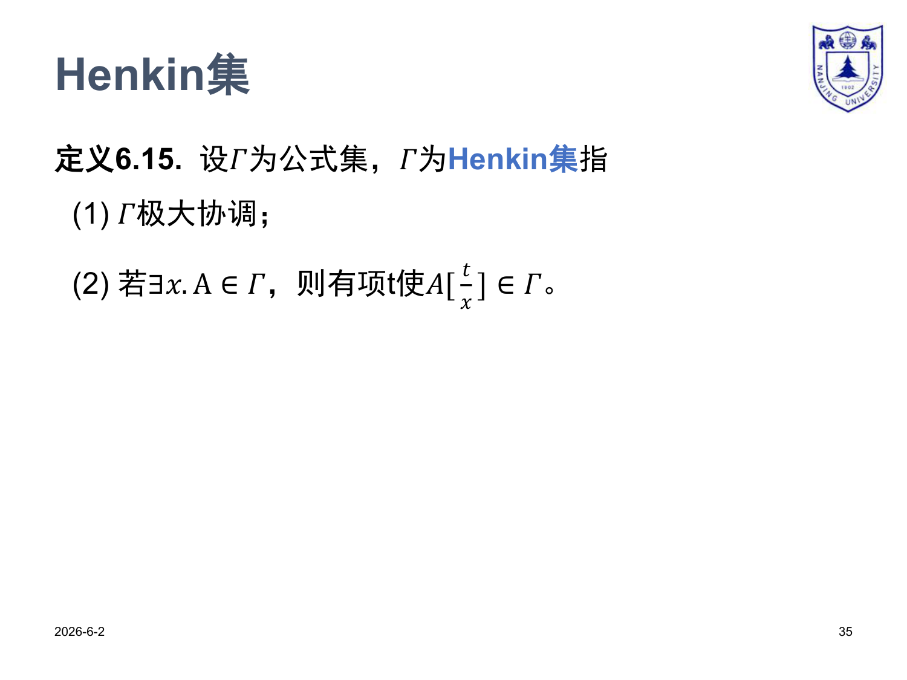
先把名字拆开：Henkin 集是什么
Henkin 集（Henkin set）：以逻辑学家 Leon Henkin 命名（1949 年他用这个构造给出完全性定理的经典证明）。它是一个公式集 Γ，同时满足两个条件——这两条正是上一页总地图里"把 Γ 喂饱"的两味料：
| 条件 | 形式化 | 直觉含义 |
|---|---|---|
| (1) 极大协调 | Γ 极大协调 | 不自相矛盾，且"满"到不能再加任何公式（加谁都矛盾） |
| (2) 见证性 | 若 ∃x.A ∈ Γ，则有项 t 使 A[t/x] ∈ Γ | 凡声称"存在某物"，集合里就真给出那个"某物 t"作证人 |
条件(2)"见证性"逐符号读
见证性（witness property），也叫"存在性见证"。逐字读条件(2)：
∃x.A ∈ Γ：集合里有一句"存在 x 使 A 成立"。例如 A 是"x 是质数"，这句就是"存在质数"。A[t/x]：把 A 里的 x 全换成具体的项 t（前序段讲过的代入记号）。即"t 是质数"。- 整条：只要集合声称"存在质数"，它就必须同时点名一个具体的 t，并把"t 是质数"也放进集合。t 就是那句存在断言的证人（witness）。
背景：可数语言 ℵ₀、加新常元、把公式排成一队
下一页的 Lindenbaum 构造要用三个"零件"，先在这里备齐，否则 p36 会看不懂。
零件1：可数 ℵ₀（aleph-null）
ℵ₀（读 aleph-null / 阿列夫零）：最小的无穷基数，表示"可数无穷"——能和自然数 ℕ 一一对应、能"排成一队数下去"的无穷。‖𝓛‖ = ℵ₀ 的意思是：语言 𝓛 里的符号（以及由它生成的全体公式）可数。
零件2：添加可数个新常元 c_n
𝓛′ = 𝓛 ∪ { c_n | n ∈ ℕ }：在原语言 𝓛 之外，新造无穷多个全新常元 c₀, c₁, c₂, …。"新"= 原语言里从没出现过。
零件3：把全体公式枚举成 φ₀, φ₁, …
因为 𝓛 可数，可以把扩充语言 𝓛′ 的全体公式排成一个无穷序列 φ₀, φ₁, …, φ_n, …（n ∈ ℕ），不重不漏。这叫枚举（enumeration）。
有了这队公式，就能"逐个表态"：第 n 步处理 φ_n —— 能加就加，加了矛盾就跳过。处理完所有 φ_n，集合就"满"了（极大性的来源）。
定义 6.16 + 定理 6.17 · Lindenbaum 链的三分支构造
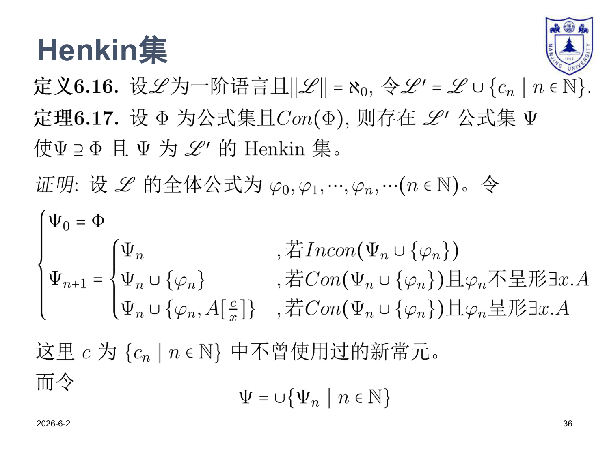
定理 6.17 要证什么
定理 6.17：只要 Φ 协调（Con(Φ)），就存在 𝓛′ 上的公式集 Ψ，使 Ψ ⊇ Φ 且 Ψ 是 𝓛′ 的 Henkin 集。
翻成总地图的语言：这就是 ①→② 那一步——把一个普通的协调集 Φ，扩张成一个 Henkin 集 Ψ。下面的构造就是"扩张的具体做法"。
构造：Ψ_n 链 + 三分支规则（看图中大括号）
定义一条递增的集合链 Ψ₀ ⊆ Ψ₁ ⊆ Ψ₂ ⊆ …。起点 Ψ₀ = Φ。每一步看队列里的第 n 个公式 φ_n，按三种情况决定 Ψ_{n+1}：
| 情况 | 条件 | 动作 Ψ_{n+1} = | 为什么这样 |
|---|---|---|---|
| ① 加了矛盾 | Incon(Ψ_n ∪ {φ_n}) | Ψ_n（不加） | φ_n 会破坏协调，丢掉它 |
| ② 能加且非∃式 | Con(...) 且 φ_n 不呈 ∃x.A 形 | Ψ_n ∪ {φ_n}（加） | 加进来不矛盾，收下 |
| ③ 能加且是∃式 | Con(...) 且 φ_n 呈 ∃x.A 形 | Ψ_n ∪ {φ_n, A[c/x]}（加 + 配证人） | 不仅收下 ∃x.A，同时塞证人 A[c/x] |
c 为 {c_n} 中不曾使用过的新常元。每次都挑一个全新、没露过面的常元当证人。这是 p38 归纳证明能走通的命门——新常元干净，不会和已有公式纠缠出矛盾。最后取并集
把链上所有 Ψ_n 并起来，得到最终的 Ψ。它收纳了"逐步处理每个公式"的全部结果。下面 6 页就是逐条验证：这个 Ψ 确实是 Henkin 集。
六条性质总览：Ψ 是 Henkin 集的拆解清单
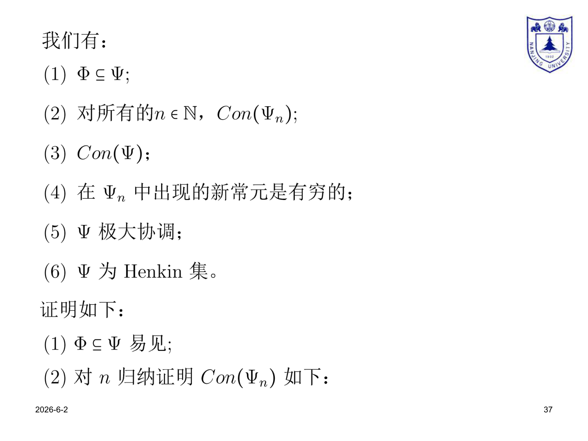
把"Ψ 是 Henkin 集"拆成 6 个小目标
直接证"Ψ 是 Henkin 集"太大，课件把它拆成 6 条性质，逐条击破。先把这 6 条和总目标的关系列清，后面就是填空：
| 性质 | 内容 | 作用 / 证在哪页 |
|---|---|---|
| (1) | Φ ⊆ Ψ | 扩张确实包含原集合（"易见"，本页带过） |
| (2) | 对所有 n，Con(Ψ_n) | 链上每一环都协调 → p38 归纳证明 |
| (3) | Con(Ψ) | 并集也协调 → p39（由(2)推出） |
| (4) | Ψ_n 中新常元有穷 | 技术引理，保证总能找到"还没用过"的新常元 |
| (5) | Ψ 极大协调 | Henkin 条件(1) → p40-41 |
| (6) | Ψ 为 Henkin 集 | 补上见证性，收口 → p41 |
性质 (2)：对 n 归纳证 Con(Ψ_n)——三情况，重点看 ∃
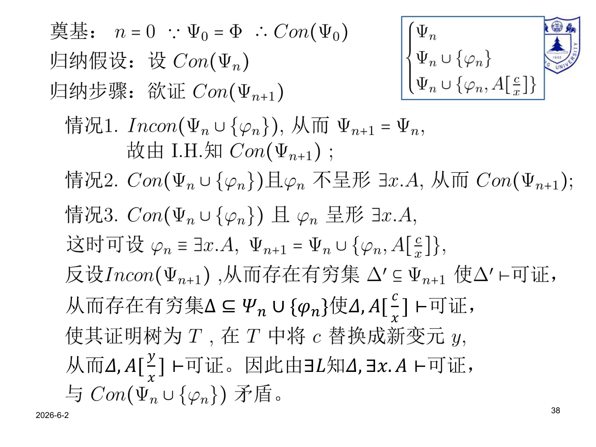
归纳法骨架
- 奠基 n=0：Ψ₀ = Φ，而 Φ 协调（定理前提），所以 Con(Ψ₀)。✓
- 归纳假设（I.H.）：设 Con(Ψ_n)。
- 归纳步骤：要证 Con(Ψ_{n+1})。按构造的三情况分别验。
情况 1（没加）
Incon(Ψ_n ∪ {φ_n})，构造规定 Ψ_{n+1} = Ψ_n。既然没变，由 I.H. 直接得 Con(Ψ_{n+1})。✓
情况 2（加了非∃式）
条件本身就是 Con(Ψ_n ∪ {φ_n})，而 Ψ_{n+1} 正是这个集合，所以协调。✓ 这两种情况几乎白送。
情况 3（加 ∃ 式 + 证人）——真正的难点
此时 φ_n ≡ ∃x.A，Ψ_{n+1} = Ψ_n ∪ {φ_n, A[c/x]}。我们多塞了一个证人 A[c/x]，会不会塞出矛盾？用反证法证不会：
⟹ 有有穷子集 Δ′ ⊆ Ψ_{n+1} 使 Δ′ ⊢ 可证（矛盾）
⟹ 有有穷 Δ ⊆ Ψ_n∪{φ_n}，使 Δ, A[c/x] ⊢ 可证（把证人单拎出来）
设这棵证明树为 T
⟹ 在 T 中把常元 c 整体换成一个新变元 y，得 Δ, A[y/x] ⊢ 可证
⟹ 由 ∃L 规则（前序段的一阶量词左规则）：Δ, ∃x.A ⊢ 可证
⟹ 即 Δ, φ_n ⊢ 可证，与 Con(Ψ_n ∪ {φ_n}) 矛盾
回到总地图：我们正在打磨 ①→② 的扩张，确认"每加一步都不破坏协调"。
性质 (3)：Con(Ψ)——并集也协调
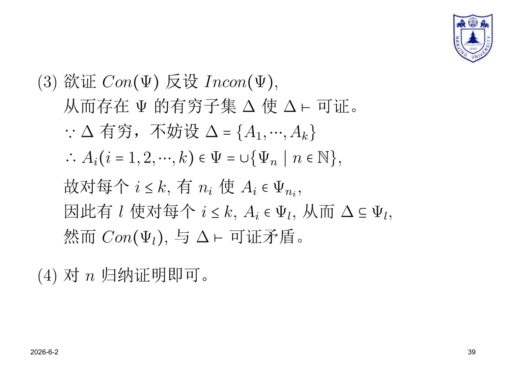
从"每环协调"到"整体协调"
性质(2)只说了链上每个 Ψ_n 协调，但 Ψ 是无穷个 Ψ_n 的并。无穷并起来会不会突然矛盾？用反证 + 有穷性这个杀手锏：
⟹ 存在有穷子集 Δ ⊆ Ψ 使 Δ ⊢ 可证（矛盾）
设 Δ = {A₁, …, A_k}（有穷，只有 k 个公式）
⟹ 每个 A_i ∈ Ψ = ∪Ψ_n，故各有某个 n_i 使 A_i ∈ Ψ_{n_i}
⟹ 取 l = max(n₁,…,n_k)，由链递增，所有 A_i ∈ Ψ_l，即 Δ ⊆ Ψ_l
⟹ 于是 Δ ⊢ 可证 ⟹ Incon(Ψ_l)，与性质(2) Con(Ψ_l) 矛盾
性质 (5) 上：极大性只需证一个判据
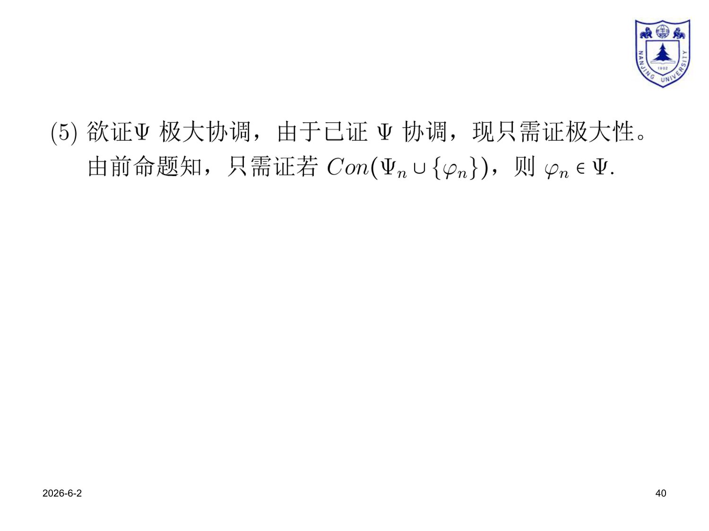
"极大协调"拆成两半，一半已到手
要证 Ψ 极大协调 = 协调 + 极大。协调已由性质(3)拿下，只剩"极大性"。
本页引用"前命题"把极大性归约成一个干净的判据（图中只给了上半句，下半页 p41 补全）：
只需证：若 Con(Ψ_n ∪ {φ_n})（即 φ_n 加进来不矛盾），则 φ_n ∈ Ψ。
导航：我们在补齐 Henkin 条件(1)（极大协调）的"极大"那一半。
性质 (5)(6)：极大协调 + Henkin 性，收口
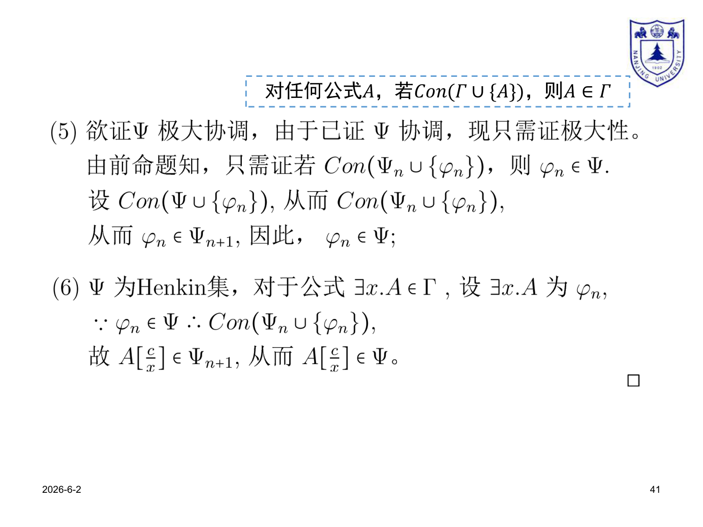
性质 (5) 补全：证那个判据
要证"若 Con(Ψ_n ∪ {φ_n}) 则 φ_n ∈ Ψ"。看图中推理：
⟹ Con(Ψ_n ∪ {φ_n})（因 Ψ_n ⊆ Ψ，子集也协调）
⟹ 命中构造的情况②或③，φ_n 被加入 Ψ_{n+1}
⟹ φ_n ∈ Ψ_{n+1} ⊆ Ψ ✓
逻辑很顺：构造在第 n 步处理 φ_n 时，只要它和当时的集合相容，就一定收下它。所以"相容必入选"，极大性成立。至此性质(5) Ψ 极大协调 = Henkin 条件(1) 拿下。
性质 (6)：见证性——Henkin 条件(2)
这一步几乎是把 p36 情况③的设计"读回来"：
⟹ φ_n ∈ Ψ ⟹ 当初 Con(Ψ_n ∪ {φ_n})（否则不会被加）
⟹ 命中构造情况③，Ψ_{n+1} = Ψ_n ∪ {φ_n, A[c/x]}
⟹ A[c/x] ∈ Ψ_{n+1} ⊆ Ψ ✓（证人 c 就在 Ψ 里）
背景：Hintikka 集是什么，凭什么能"读出"一个模型
Hintikka 集（Hintikka set）：以芬兰逻辑学家 Jaakko Hintikka 命名，也叫"model set / 模型集"。它不是靠"协调/极大"这类抽象性质定义的，而是靠一组具体的语法封闭性条件定义——正因为条件具体，它能被"直接翻译成一个模型"。
核心思想：一个集合，处处"自洽展开"
Hintikka 集是满足一串"如果含某复合公式，就必含它的分解部件"的条件的公式集。直觉：它对每种逻辑联结词都"算到底、不留账"。举几条感受一下（Γ 表示该集合）：
| # | 条件（节选自本讲） | 读法 |
|---|---|---|
| 1 | A 原子 ⟹ A 与 ¬A 不同时属于 Γ | 原子层面不打架（一致性） |
| 2 | ¬¬A ∈ Γ ⟹ A ∈ Γ | 双重否定可消去 |
| 3 | A→B ∈ Γ ⟹ ¬A∈Γ 或 B∈Γ | 蕴含按真值表分解 |
| 5 | A∧B ∈ Γ ⟹ A∈Γ 且 B∈Γ | 合取拆成两片 |
| 9 | ∀x.A ∈ Γ ⟹ 对所有项 t，A[t/x]∈Γ | 全称对每个个体兑现 |
| 10 | ¬∀x.A ∈ Γ ⟹ 有项 t，¬A[t/x]∈Γ | 存在反例（要见证人！） |
凭什么能"读出"模型？——典范模型预告
有了这些条件，就能用集合自身造一个模型：论域取"所有项"，每个原子公式在模型里的真假，直接照它在不在 Γ 里来定（在 Γ 里就真，不在就假）。条件1-17 恰好保证这样"读"出来的真值，对每个复合公式都和"它在不在 Γ"一致。这就是典范模型 / 项模型（详见 p52 前的背景 C3）。前序段已经证过关键结论：每个 Hintikka 集都可满足。
定理 6.18 · Henkin ⟹ Hintikka：命题条件 (1)-(5)
定理 6.18 与证明套路
定理 6.18：若 Γ 为 Henkin 集，则 Γ 为 Hintikka 集。证法：对照 Hintikka 定义逐条验证——把 Hintikka 的每条封闭性条件，用 Henkin 的"极大协调 + 见证性"推出来。本页给出前 5 条（后面 p43-47 给同样这 5 条配大字示意，对照看更清楚）。
(1) 原子无矛盾
要证：A 原子时 A、¬A 不同时在 Γ。理由直接：Con(Γ)。若两者都在，{A, ¬A} ⊆ Γ 立刻矛盾，违反协调。
(2) ¬¬消去
设 ¬¬A ∈ Γ。前序段定理 ¬¬A ⊢ A 可证，故 Γ ⊢ A。又 Γ 极大协调——这里用上极大性：凡 Γ 能证出的公式必已在 Γ 中（否则把 A 加进去仍协调，与极大矛盾）。所以 A ∈ Γ。
(3) →的分解
设 A→B ∈ Γ，反证：假设 ¬A∉Γ 且 B∉Γ。由命题6.6（极大协调集对"不含某式"的刻画），¬A∉Γ 推出 A∈Γ、B∉Γ 推出 ¬B∈Γ。于是 A, A→B ⊢ B 可证（→L / 分离规则），得 B∈Γ，与 ¬B∈Γ 矛盾。故 ¬A∈Γ 或 B∈Γ。
(4)(5) 同法
(4) ¬(A→B)：由 ¬(A→B) ⊢ A 且 ⊢ ¬B（命题6.7），得 A∈Γ 且 ¬B∈Γ。(5) A∧B：由 A∧B ⊢ A、A∧B ⊢ B，得 A,B 都∈Γ。
条件 1 示意 · 原子公式不自相矛盾
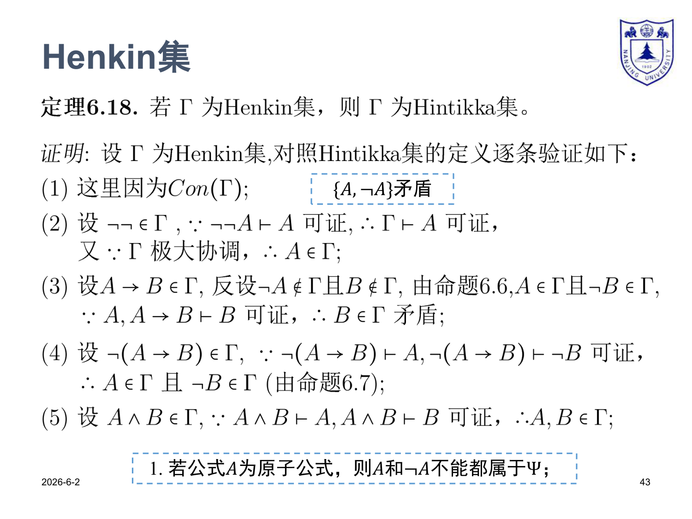
图右上虚线框 {A, ¬A} 矛盾，底部框给出 Hintikka 条件1 的正式表述："若公式 A 为原子公式，则 A 和 ¬A 不能都属于 Ψ。"
Con(Ψ) 直接排除 {A,¬A} 同在——否则集合里就有一对互相否定的公式，立即不协调。原子层的"不打架"是整个模型读取的最底层保证。条件 2 示意 · ¬¬A ∈ Ψ ⟹ A ∈ Ψ
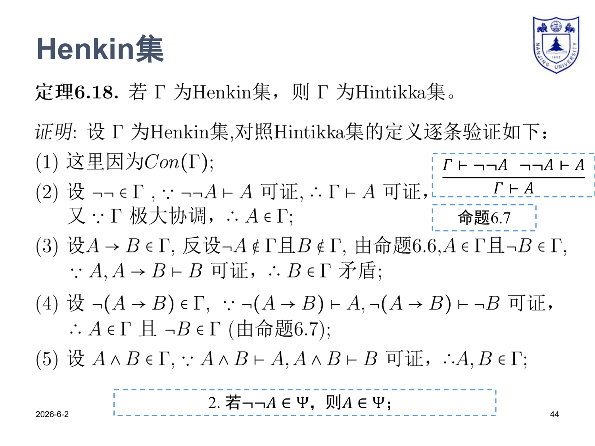
图右给出关键证明片段（一条推理规则形态）：Γ ⊢ ¬¬A ¬¬A ⊢ A ⟹ Γ ⊢ A（用 Cut / 传递性把两段证明接起来），并标注用到命题 6.7。底框：条件2"若 ¬¬A∈Ψ，则 A∈Ψ"。
Γ⊢A + 极大 ⟹ A∈Γ。条件 3 示意 · A→B ∈ Ψ ⟹ ¬A∈Ψ 或 B∈Ψ
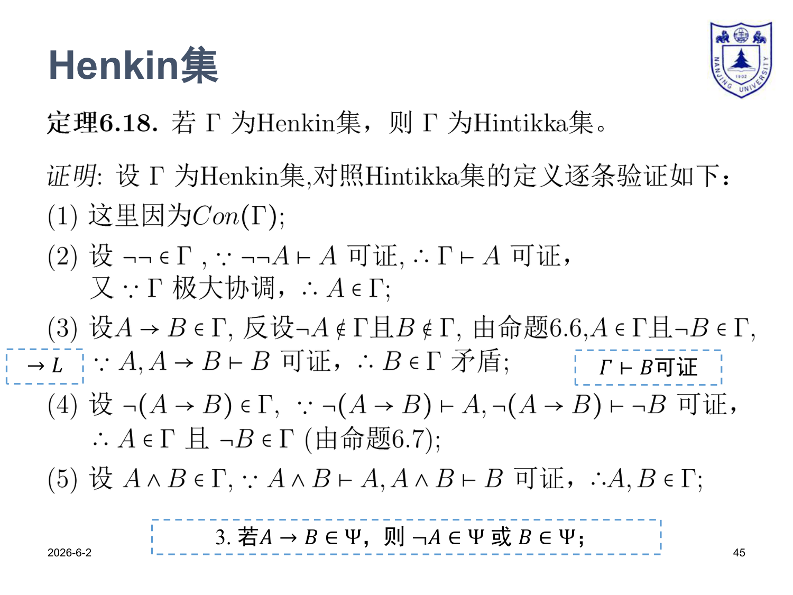
图左标 →L（一阶/命题 G 系统的蕴含左规则），右标 Γ ⊢ B 可证。底框：条件3"若 A→B∈Ψ，则 ¬A∈Ψ 或 B∈Ψ"。
反证法复盘（对照 p42 的(3)）
- 反设两者都不在：¬A∉Γ 且 B∉Γ。
- 极大协调 ⟹ A∈Γ（因 ¬A∉Γ），¬B∈Γ（因 B∉Γ）。
- 手里有 A 和 A→B，用 →L（分离 / modus ponens 的证明论版本）得 Γ⊢B。
- 极大 ⟹ B∈Γ，与 ¬B∈Γ 撞车，矛盾。
条件 4 示意 · ¬(A→B) ∈ Ψ ⟹ A∈Ψ 且 ¬B∈Ψ
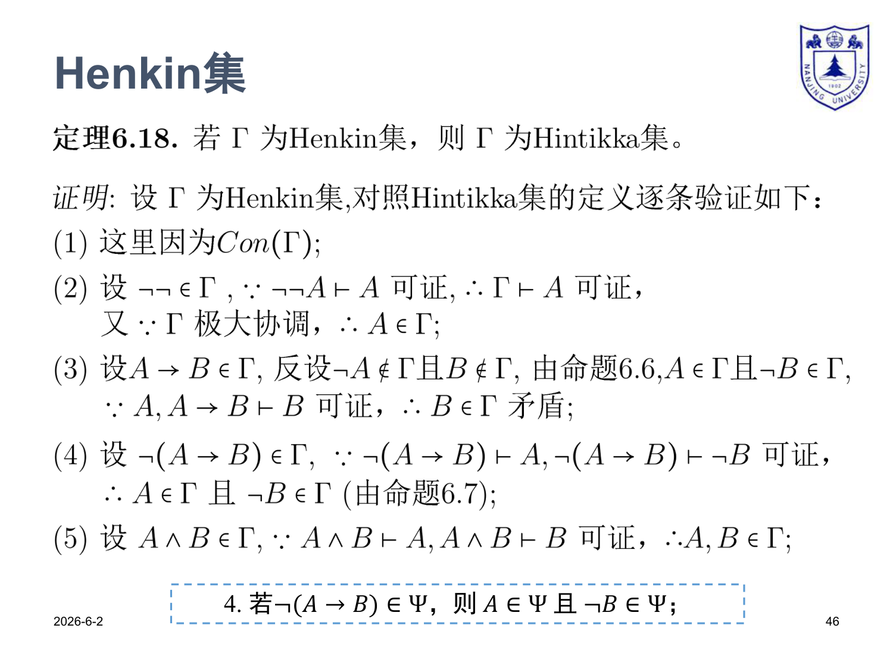
底框：条件4"若 ¬(A→B)∈Ψ，则 A∈Ψ 且 ¬B∈Ψ"。
¬(A→B) ⊢ A 且 ¬(A→B) ⊢ ¬B 都可证。Γ 含 ¬(A→B)，故 Γ⊢A 且 Γ⊢¬B，极大协调升级为 A∈Γ 且 ¬B∈Γ。条件 5 示意 · A∧B ∈ Ψ ⟹ A∈Ψ 且 B∈Ψ
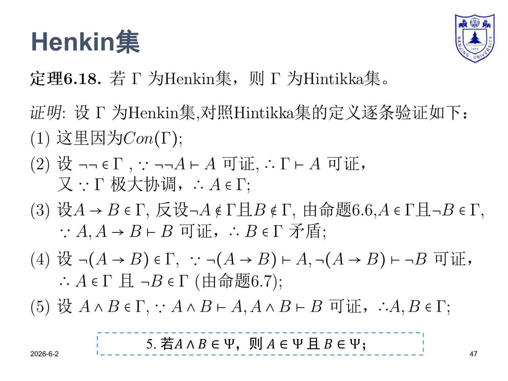
底框：条件5"若 A∧B∈Ψ，则 A∈Ψ 且 B∈Ψ"。最直观的一条。
A∧B ⊢ A、A∧B ⊢ B（合取消去，前序段规则）。Γ 含 A∧B ⟹ Γ⊢A 且 Γ⊢B ⟹（极大）A∈Γ 且 B∈Γ。条件 6 · ¬(A∧B)，以及 (7)(8) 同理
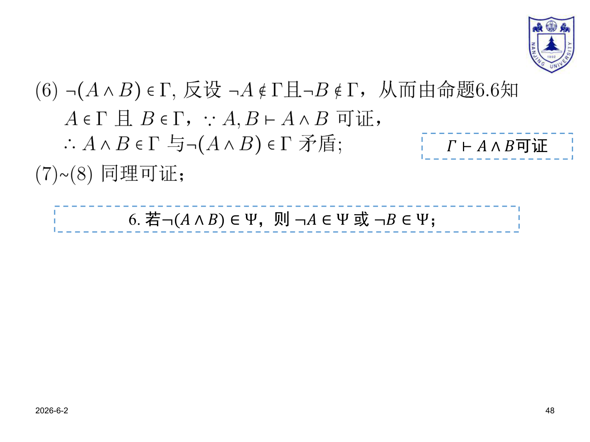
正文给出 (6) 的证明，底框写出对应的 Hintikka 条件6"若 ¬(A∧B)∈Ψ，则 ¬A∈Ψ 或 ¬B∈Ψ"。然后一句 "(7)~(8) 同理可证" 带过。
(6) 的证明（反证，β 型）
- 设 ¬(A∧B)∈Γ，反设 ¬A∉Γ 且 ¬B∉Γ。
- 由命题6.6（极大协调），¬A∉Γ⟹A∈Γ，¬B∉Γ⟹B∈Γ。
- A,B ⊢ A∧B（合取引入），故 Γ⊢A∧B，极大 ⟹ A∧B∈Γ。
- 但 ¬(A∧B)∈Γ，{A∧B, ¬(A∧B)} 矛盾，违反协调。
条件 9 · ∀x.A ∈ Ψ ⟹ 对所有项 t，A[t/x] ∈ Ψ
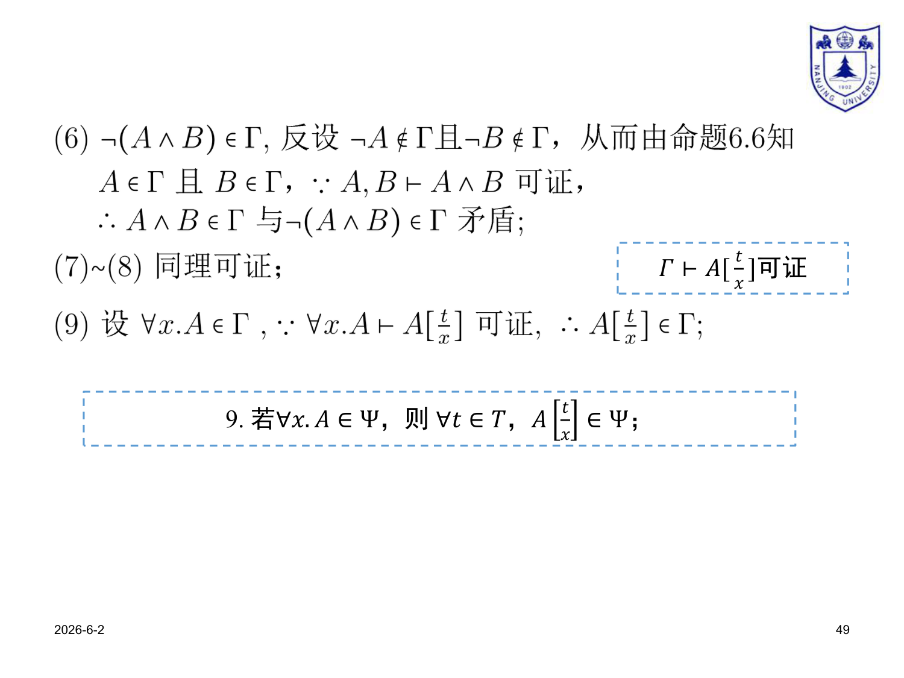
图右框 Γ ⊢ A[t/x] 可证，底框：条件9"若 ∀x.A∈Ψ，则对所有 t∈T，A[t/x]∈Ψ"（T = 全体项）。
验证（一行搞定）
设 ∀x.A∈Γ。对任意项 t，前序段的 ∀左规则 / 全称实例化给出 ∀x.A ⊢ A[t/x] 可证。故 Γ⊢A[t/x]，由极大协调 ⟹ A[t/x]∈Γ。
条件 10 · ¬∀x.A ∈ Ψ ⟹ 有项 t，¬A[t/x] ∈ Ψ —— 见证性登场
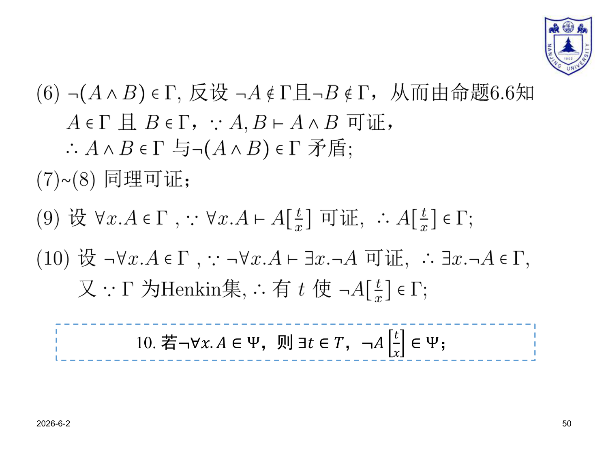
底框：条件10"若 ¬∀x.A∈Ψ，则有项 t∈T，¬A[t/x]∈Ψ"。这是 (9) 的"否定版"，但性质完全不同——它要求"存在某个项 t"，这正是见证性派上用场的地方。
验证（两步，第二步用 Henkin 见证性）
① 语法：¬∀x.A ⊢ ∃x.¬A 可证 ⟹ Γ⊢∃x.¬A ⟹（极大）∃x.¬A ∈ Γ
② Γ 是 Henkin 集 ⟹ 见证性 ⟹ 有项 t 使 (¬A)[t/x] = ¬A[t/x] ∈ Γ ✓
① 第一步把 ¬∀ 翻成存在式 ∃x.¬A——"并非对所有 x 都 A" ⟺ "存在 x 使 ¬A"（量词的德摩根律），这步只用极大协调。
② 第二步集合里有了存在式 ∃x.¬A，但存在式光在集合里不够，得有具体证人——Henkin 的见证性正好保证：有一个项 t 使 ¬A[t/x]∈Γ。这个 t 就是"使 A 不成立的那个反例个体"。
条件 (11)-(17) · 量词其余 + 等词公理，归类略讲
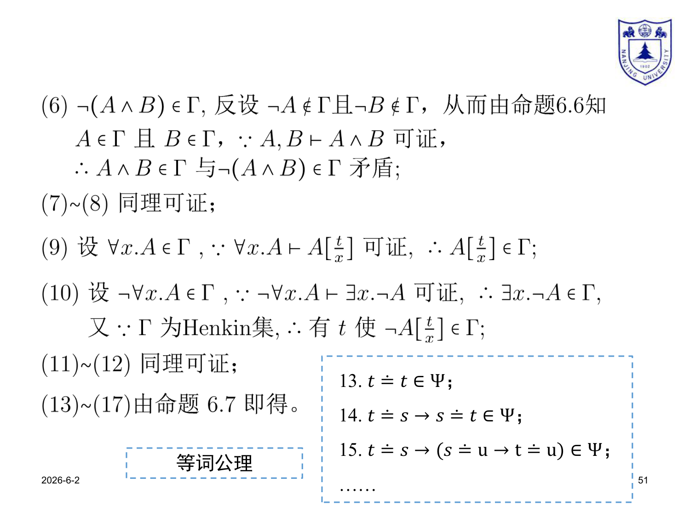
课件这里高度浓缩："(11)~(12) 同理可证"、"(13)~(17) 由命题 6.7 即得"。右侧框列出 (13)-(15) 的样子（等词公理），左下标"等词公理"。
(11)(12)：量词的其余否定情形
大概率是 ∃x.A 与 ¬∃x.A 的分解条件，与 ∀(条件9)/¬∀(条件10) 镜像：
- ∃x.A 类 ⟹ 有项 t 使 A[t/x]∈Γ —— 直接就是 Henkin 见证性（和条件10同源）。
- ¬∃x.A 类 ⟹ 对所有 t，¬A[t/x]∈Γ —— 套条件9 的"对所有"模式（α 型无穷版）。
(13)-(17)：等词公理（看右框）
这几条要求 Γ 含全部等词（≐，前序段记号）公理，逐条对照图中右框：
| # | 等词公理 | 含义 |
|---|---|---|
| 13 | t ≐ t ∈ Ψ | 自反性：任何项等于自己 |
| 14 | t≐s → s≐t ∈ Ψ | 对称性 |
| 15 | t≐s → (s≐u → t≐u) ∈ Ψ | 传递性 |
| … | （函数/谓词的代换相容） | 相等的项可互换 |
⊢ 恒可证（不依赖 Γ 的具体内容）。既然 Γ⊢(等词公理)，由极大协调它们必属于 Γ。所以这几条是"白给"的——课件略讲完全合理。它们的用途在造模型时：保证典范模型里"项相等"是一个良定义的等价关系（自反/对称/传递 + 代换相容），论域才能按"相等的项归为一类"来构造（详见 p52 前的背景 C3）。背景：从 Hintikka 集造典范模型（项模型）
定理 6.18 把 Ψ 做成了 Hintikka 集。前序段已证"Hintikka 集可满足"——可满足意味着真有一个模型让 Ψ 全为真。这个模型是怎么来的？答案：用 Ψ 自己造。这种"拿语法对象当论域"的模型叫典范模型 / 项模型（canonical model / term model）。
造法三句话
- 论域 = 全体项（的等价类）。个体不是抽象的"东西"，就是语言里的项 t。若等词公理逼着 t≐s∈Ψ，就把 t、s 归成同一个个体（除以等词等价关系——这正是 p51 等词公理13-17 的用处）。
- 函数/常元 = 语法拼接。常元 c 解释成它自己，函数 f 作用在项上就是组成新项 f(t₁,…)。
- 谓词真值 = 读集合成员。原子公式 P(t₁,…) 在模型里为真 ⟺ P(t₁,…) ∈ Ψ。真假直接抄 Ψ。
备好这层理解，下一页定理 6.19 的"四连跳"就是把总地图一口气走完。
定理 6.19 · Γ 协调 ⟹ Γ 可满足（四连跳）
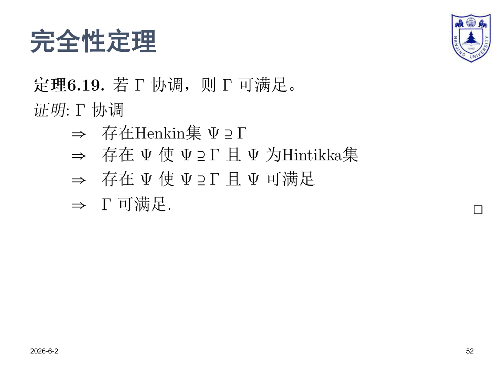
这就是全篇的"主引擎"
定理 6.19：若 Γ 协调，则 Γ 可满足。证明把前面所有零件串成一条四连跳，正是背景 C0 那张总地图：
⟹ 存在 Henkin 集 Ψ ⊇ Γ 【定理6.17·Lindenbaum构造】
⟹ 存在 Ψ⊇Γ 且 Ψ 为 Hintikka 集 【定理6.18】
⟹ 存在 Ψ⊇Γ 且 Ψ 可满足 【Hintikka集可满足·造典范模型】
⟹ Γ 可满足 【子集继承：Ψ 的模型也满足 Γ⊆Ψ】
跳1（①→②）= 组 F 全部 8 页的成果，最硬；
跳2（②→③）= 组 G 的定理6.18，逐条验证 17 条；
跳3（③→可满足）= 背景 C3 的典范模型 + 前序段"Hintikka可满足"；
跳4 = 几乎白送：Ψ 的那个模型让 Ψ 全真，而 Γ⊆Ψ，所以 Γ 也全真。子集自动继承可满足性。
定理 6.19 · 四连跳每一步的依据（配图）
这页和 p52 内容相同，右侧加了三个虚线框，把每一跳的依据标出来，正好对齐上一页的讲解：
| 推理步 | 图中标注 | 就是 |
|---|---|---|
| Con ⟹ 有 Henkin 集 | 定理6.17 | Lindenbaum 构造（组 F） |
| Henkin ⟹ Hintikka | 定理6.18 | 逐条验证（组 G） |
| Hintikka ⟹ 可满足 | Hintikka集可满足 | 典范模型（背景 C3 + 前序段） |
命题 6.8 · 反方向：可满足 ⟹ 协调
本页在 p53 基础上补一个虚线框 命题 6.8，给出和 6.19 反向的两条事实：
| 命题6.8 | 内容 | 本质 |
|---|---|---|
| (1) | 若 Γ 可满足，则 Con(Γ) | 有模型 ⟹ 无矛盾（这是可靠性的语义面） |
| (2) | 若 Γ 矛盾，则 Γ 不可满足 | (1) 的逆否，等价说法 |
· 定理6.19：Con(Γ) ⟹ 可满足（难，靠 Henkin 构造，刚证完）
· 命题6.8：可满足 ⟹ Con(Γ)（易，有模型的东西当然不会推出矛盾）
两条合起来：Con(Γ) ⟺ Γ 可满足。"无矛盾"和"有模型"是一回事——这是完全性定理的语义内核。
定理 6.20 · 完全性定理：Γ⊢A ⟺ Γ⊨A
陈述：把"可证"和"语义蕴涵"画等号
定理 6.20（Completeness / 完全性定理）：Γ ⊢ A ⟺ Γ ⊨ A。先把两个符号再确认一遍（前序段术语）：
| 符号 | 读法 | 含义 |
|---|---|---|
| Γ ⊢ A | Γ 可证 A（语法） | 能在证明系统里写出一棵从 Γ 到 A 的证明树 |
| Γ ⊨ A | Γ 语义蕴涵 A（语义） | 凡使 Γ 全真的模型，必使 A 也真 |
completeness（完全性）："证明系统强到能证出所有语义为真的东西，一条不漏"。这是逻辑学最深刻的结果之一（Gödel 完全性定理）。
两个方向
- "⟹" 方向 = Soundness（可靠性）：Γ⊢A ⟹ Γ⊨A。"能证的都是真的"，前序段已证（结构归纳每条规则保真），本页一句带过。
- "⟸" 方向（本讲新成果）：Γ⊨A ⟹ Γ⊢A。"真的都能证"。证法是反证 + 定理6.19，分两种情况（图中）：
情况1. Incon(Γ)：矛盾集能证一切，易见 Γ⊢A。✓
情况2. Con(Γ)：反设 Γ⊢A 不可证 ⟹ Con(Γ∪{¬A})
⟹（定理6.19）有 𝕄,σ 使 𝕄 ⊨_σ Γ∪{¬A}
但 Γ⊨A 又要求 𝕄 ⊨_σ A —— 与 𝕄⊨_σ ¬A 矛盾。
定理 6.20 · ⟸方向：语义前提 Γ⊨A 的用法
本页给 p55 情况2 加了一个虚线框："对于任何模型，若 Γ 可满足，则 A 可满足"——这是把语义前提 Γ⊨A 翻成大白话。
定理 6.20 · ⟸方向收口 + 全篇回望
最后一页把情况2 的两处依据都标全（两个虚线框）：
| 框 | 图中文字 | 对应反证的哪一步 |
|---|---|---|
| 上 | 有效性：对任何模型，若满足 Γ，则也满足 A | = 前提 Γ⊨A，逼出"𝕄 必满足 A" |
| 下 | 定理6.19，Γ可满足 且 Γ∪{¬A}可满足 | = 由 Con(Γ∪{¬A}) 造出模型 𝕄 |
两框一夹：定理6.19 造出满足 Γ∪{¬A} 的模型（下框）⟹ 它满足 ¬A；有效性 Γ⊨A 又逼它满足 A（上框）⟹ A 与 ¬A 同模型为真，矛盾。反设"Γ⊢A 不可证"被推翻，故 Γ⊢A。完全性定理证毕（□）。
一句话串起来："A 语义上真但证不出"（Γ⊨A 且 Γ⊬A）⟹ 添 ¬A 仍协调 ⟹（Henkin 一路造模型，定理6.19）有个模型让 Γ 和 ¬A 同真 ⟹ 但 Γ⊨A 说这模型必满足 A ⟹ A、¬A 撞车，荒谬。所以"语义真"必然"证得出"。
· 组 F（p35-41）：把协调集扩成 Henkin 集——Lindenbaum 三分支构造 + 6 条性质，全段最硬的体力活，核心创意是"遇 ∃ 配新常元证人"。
· 组 G（p42-51）：证 Henkin 就是 Hintikka——17 条逐条验，命题条件靠极大协调，存在条件靠见证性，等词靠可证性。
· 组 H（p52-57）：用 典范模型把 Hintikka 兑现成"可满足"，得定理6.19（Con⟹可满足），再反证收口成完全性定理 Γ⊢A ⟺ Γ⊨A。
⊢（能证）与 ⊨（为真）这两套独立发展的体系，在这里被证明完全等价——这就是数理逻辑这一章的全部目的地。
紧致性定理（Compactness）
这页在说什么
这是完全性定理的第一个大推论。先把生词点破：
| 术语 | 英文全称 | 中文含义 |
|---|---|---|
| 紧致性 | Compactness | "无穷"层面的可满足性，完全由"所有有穷片段"决定 |
定理 6.21 的内容：设 Γ 是一个公式集（可以有无穷多条公式）。如果 Γ 的每一个有穷子集 Δ 都可满足（有模型），那么整个 Γ 本身也可满足。
证明怎么走（反证 + 前面学过的工具）
这段证明把前几段的几个旧术语串了起来，先快速回忆一句：
Incon(Γ)= inconsistent，不协调：能从Γ推出矛盾（如A∧¬A）。反之Con= consistent 协调。⊨（可满足 / 有模型）与⊢（可证）：第 1–3 段已讲，完全性定理把二者打通了。
证明用反证法，链条是：
- 第一个 ⇒ 用可靠性/完全性：不可满足（无模型）的公式集必然不协调。
- 第二个 ⇒ 是关键一步——证明是有穷长的，推出
A∧¬A只用到了Γ里有限多条公式，把这有限几条收集起来就是有穷子集Δ，它已经⊢ A∧¬A。 - 于是这个
Δ不可满足。但定理前提说"每个有穷子集都可满足"——矛盾。
背景 D0：什么叫"可判定"、"算法能不能停下来"
下一页要讲"一阶逻辑不可判定"。但你还没学过计算理论，"可判定 / 算法终止"这些词对你是全新的。这一页先用大白话把它们立住，p59 才看得懂。
核心问题：能不能写一个"总会停下来给答案"的程序？
设想有人问你一个判断题，比如"Γ ⊨ F 成立吗？"（即"F 是不是 Γ 的逻辑后承"）。我们想要一个程序，喂给它 Γ 和 F，它跑一阵子之后一定会停，并吐出"是"或"否"。
| 术语 | 英文全称 | 中文含义（关键看"会不会停"） |
|---|---|---|
| 可判定 | decidable | 存在一个算法，对任何输入都终止，并正确回答"是 / 否" |
| 半可判定 | semi-decidable | 算法在"答案为是"时一定会停并回答"是"；但"答案为否"时可能永远跑下去，不给回答 |
| 算法终止 | (algorithm) terminates / halts | 程序跑到某一步停下来、不再继续 |
一个生活类比
想象一台验钞机：
- 可判定：真钞、假钞放进去，机器都在 3 秒内亮灯告诉你结果。任何钞票都给答案。
- 半可判定：机器只在遇到真钞时亮绿灯；遇到假钞它就一直嗡嗡转，永远不亮灯。你看到绿灯就知道是真钞；但没亮灯时，你分不清"是假钞"还是"机器还在算"。
一阶逻辑的不可判定性
先认人名：Church 和 Turing（1936/1937）
| 专名 | 英文全称 | 是谁 / 做了什么 |
|---|---|---|
| Church | Alonzo Church | 逻辑学家，用 λ-演算证明一阶逻辑不可判定（1936） |
| Turing | Alan Turing | 用图灵机给出独立证明（1936/1937），奠定可计算性理论 |
不可判定性（undecidability）说的是什么
结论很冷峻：不存在一个算法，能对任意给定的 Γ 和 F，判断 Γ ⊨ F 是否成立、并且始终终止。
半可判定性：退一步，"是"这侧能抓住
虽然不可判定，但一阶逻辑的可证性是半可判定的。课件给了构造思路：
- 造一个算法，在一阶逻辑的自然推理系统里系统地搜索
Γ ⊢ F的证明树（一层层把所有可能的推导都列出来）。 - 若
Γ ⊢ F确实可证：那棵证明树是有穷的，搜索迟早会撞上它 → 有限步内停下、回答"是"。 - 若
Γ ⊢ F不可证：搜索找不到证明树，于是永远搜下去、不终止。
背景 D1：皮亚诺公理在直觉上想说什么
p60 要逐条列皮亚诺算术（PA, Peano Arithmetic）的 5 条公理。先别被符号吓住，它们其实就在回答一个朴素问题："自然数 0, 1, 2, 3, … 这一串东西，最少要规定哪几条规矩，才能把它们唯一钉死？"
只需要两个原料
- 一个起点：
0。 - 一个"再加一"的操作：后继函数
S（successor）。S(0)就是 1，S(S(0))就是 2……每个数n都有它的下一个S(n)。
- 不回头：
0不是任何数的后继（链子有个真正的开头，不是个圈）。 - 不撞车：不同的数后继也不同（链子不会两股并到一条上）。
- 不漏掉：这就是归纳公理——凡是"含 0、且对 S 封闭"的集合，必然就是全体自然数（链子之外没有别的多余元素）。
归纳公理为什么最特别
前几条都是说"某个具体性质"，归纳公理却是对所有子集 P（或所有性质）说话——这让它非常强，正是数学归纳法的来源。也正因为它要量化"所有性质"，PA 才足够丰富，丰富到后面能把"可证性"这种元数学命题编进算术里——这是哥德尔定理能成立的土壤。记住这一点，p61 会用到。
皮亚诺算数公理（PA）
| 术语 | 英文全称 | 中文含义 |
|---|---|---|
| PA | Peano Arithmetic | 皮亚诺算术：刻画自然数的一阶公理系统 |
| S(n) | successor of n | n 的后继，即 n 的"下一个数" |
| ≐ | (equality) | 等词，"相等"（第 2 段已引入，读作 a 等于 b） |
逐条对照（符号 → 人话）
| 公理 | 符号 | 说的是 |
|---|---|---|
| 1 | ∃N. 0 ∈ N | 0 是自然数（有个起点） |
| 2 | ∀n∈N, ∃n'. n' ≐ S(n) | 每个自然数都有（确定的）后继 |
| 3 | ∀n∈N, ¬(S(n) ≐ 0) | 0 不是任何数的后继 → 链子有开头、不成圈 |
| 4 | ∀a,b∈N, ¬(a≐b) → ¬(S(a)≐S(b)) | 不同的数后继也不同 → S 是单射、不撞车 |
| 5 | ∀P⊆N, 0∈P ∧ (n∈P→S(n)∈P) → (P≐N) | 归纳公理：含 0 且对 S 封闭的子集就等于 N → 不漏掉 |
¬(a≐b) → ¬(S(a)≐S(b))"，等价地讲就是"后继相同则原数相同"（S 是单射）。这保证 0,1,2,… 永不重复。背景 D2：哥德尔编码 #A —— 把"公式"变成"数"
接下来三页全靠一个核心招数：哥德尔编码（Gödel numbering）。它是哥德尔 1931 年的天才一击。不懂它，后面 Prf、Prov、对角化全是天书。这页专门讲透。
它要解决什么矛盾
PA 是一套"谈论自然数"的系统——它的公式只会说 0、后继、加法这类算术事实。可是"某公式 A 可证吗"是关于逻辑系统本身的话（元数学），表面上 PA 根本说不出口。哥德尔的破局思路：
记号 #A 怎么读
| 记号 | 英文 | 含义 |
|---|---|---|
| #A | Gödel number of A | 公式（或证明）A 的哥德尔码，一个具体的自然数 |
具体编法不止一种（常见的是给每个符号一个小数字，整条公式用素数幂连乘编成一个大数，可唯一还原）。编法的技术细节不重要，重要的只有两点性质：
- 唯一可逆：每条公式对应唯一一个数，每个数能解码回原公式（不会两条公式撞同一个码）。
- 机械可算：编码 / 解码、判断"某数是否是合法公式的码"，都能用算法完成（这呼应 bgD0 的"可判定"）。
Prf/Prov 就是这句话的正式写法。哥德尔的不完全性定理 · 陈述
定理在说什么（Kurt Gödel, 1931）
陈述：不存在一个一致的（consistent，相容、无矛盾）公理系统，能在系统内证明所有初等算术语言能表达的命题。
课件的形式化写法：
逐块翻译：找不到这样的系统 F，使得 F 同时满足——(1) 至少包含 PA（F ⊇ PA）、(2) 自身一致（Con(F)，无矛盾）、(3) 对每一条算术命题 A 都能判定（⊨ A）。三者不可兼得。换句话说：只要一个系统含 PA 且无矛盾，它就必然"不完备"——总有它判不了的算术命题。
最容易混的点：完备 ≠ 完全性！
本讲前半场讲的是完全性（completeness）定理：Γ⊨F ⇒ Γ⊢F，意思是"凡是逻辑上为真（在所有模型里成立）的，都能在证明系统里推出来"。一阶逻辑是完全的。
这页的不完全性（incompleteness）讲的是完全不同的一件事。这里的"完备"指的是——
"系统能对每一条命题作出判定：要么证明它真，要么证明它假。"
哥德尔说：含 PA 的一致系统做不到这点，总有命题 A，系统既证不出 A 真、也证不出 A 假，A 悬在那里。
| 完全性 completeness（前半场） | 不完全性 incompleteness（本页） | |
|---|---|---|
| 主语 | 一阶逻辑（纯逻辑层面） | 含 PA 的算术公理系统 |
| 在说 | 逻辑真 ⇒ 可证（⊨⇒⊢） | 存在命题既不可证、其否定也不可证 |
| 结论 | 一阶逻辑是完全的（好消息） | 算术系统不可能完备（界限） |
证明梗概(一)：Prf 与 Prov
有了 bgD2 的哥德尔编码，这页把"可证性"正式翻译成算术谓词。三步：
① 用 #A 把公式变成数
对公式 A，#A 是它的哥德尔码（见 bgD2）。从此谈"公式"就是谈"数"。
② Prf_F(x, y)：x 是 y 的证明
| 记号 | 英文全称 | 含义 |
|---|---|---|
| Prf_F(x,y) | Proof predicate | 二元关系"x 是 y 的证明"（x、y 都是哥德尔码） |
课件的关键论证：判断"一串公式到底构不构成对某公式的合法证明"，这件事是可判定的（呼应 bgD0——逐步核对每一步是否合法推理，一定能在有限步内查完、停机）。既然可判定，这条关系就可以在 F 内部用一个算术公式表达出来，记作 Prf_F(x, y)：x 这个码所解出的证明，正好是 y 这个码所解出公式的一个证明。
③ Prov_F(y)：y 可证
| 记号 | 英文全称 | 含义 |
|---|---|---|
| Prov_F(y) | Provability predicate | "y 是可证的"，定义为 ∃x. Prf_F(x,y)（存在一个证明 x） |
读法："y 可证" = "存在某个 x，x 是 y 的证明"。那个存在量词 ∃x 就是"停不下来"的来源——要在所有 x 里找见证。由此得到一条关键桥梁：
翻译：如果 A 在 F 中真的可证，那么"A 可证"这件事本身也能在 F 内部被证出来。系统不仅能证 A，还能证"我证得了 A"。这条性质（可证性可被系统内部反映）是下一步对角化构造的弹药。
背景 D3：对角化 / 自指 —— "我不可证"这句话怎么造出来
p63 会突然冒出一句"对角化引理（diagonalization lemma）"，然后造出一个说"我自己不可证"的句子 G_F。如果不先理解"自指（self-reference）是怎么合法发生的"，这步会像变魔术。这页用悖论破题。
从两个老悖论说起
- 说谎者悖论："这句话是假的。" —— 若它真，则它说的（自己假）成立，于是它假；若它假，则它说的不成立，于是它真。死循环。
- 理发师悖论：村里理发师"只给所有不自己刮胡子的人刮胡子"。那他给不给自己刮？给，则他属于"自己刮的人"，按规矩不该给；不给，则他属于"不自己刮的人"，按规矩又该给。
共同点：一句话谈到了自己，并对自己作了否定，于是真假翻来覆去。
哥德尔的高明：把"真假"换成"可不可证"
G_F：="这句话在 F 中不可证"
把要命的"假"换成温和的"不可证"。这句话不会爆炸，反而正好把系统逼到墙角（见 p63/64）。"对角化"这个名字哪来的
怎么让一句算术公式"指向自己的哥德尔码"？靠 bgD2：公式能用数指代公式。对角化的技巧是——把一个带自由变元的公式 A(x)，用它自己的编号代入它自己的那个变元 x（即 A(#A) 这种"x 处填自己"的操作）。"自己作用于自己"在编号表里恰好取的是对角线上的格子，故名对角化。
G_F。p63 直接用这个引理，p65–66 才回头证它本身。证明梗概(二)：用对角化造出 G_F
第一步：约定记号 A(x)
令 A(x) 表示 F 中任意一个只有一个自由变元 x 的公式。把它想成"一个关于 x 的性质"，x 处可以填进具体的数（比如某个哥德尔码）。
第二步：对角化引理（先用，不证）
引理承诺：能机械地构造出一个公式 D，使得
读法：A[#D / x] 是"把 A(x) 里的 x 换成 D 自己的哥德尔码 #D"。所以这条说的是——D 等价于"A 这个性质对 D 自己成立"。D 在谈论自己，正是 bgD3 说的合法自指。（引理本身留到 p65–66 证。）
第三步：把 A 取成 ¬Prov_F，得到 G_F
现在让 A(x) 具体取为 ¬Prov_F(x)（"x 不可证"，Prov 见 p62）。代入对角化引理，就存在一个公式 G_F 使得：
翻译：G_F 等价于"G_F 自己的哥德尔码不可证"，也就是那句蓄谋已久的——
课件结论先抛出来：这个 G_F 既不是可证的，也不是不可证的（即 F 既证不出 G_F、也证不出 ¬G_F）。为什么——下一页 p64 给出推理。
G_F 完完全全是一条普通的算术公式（一串关于自然数的符号），只是经过编码，它的"算术内容"恰好对应着"我不可证"这句元话语。它不是自然语言的把戏，而是 PA 内部货真价实的命题。证明梗概(二)：G_F 既不可证也不可否证
本页上半与 p63 相同，关键是底部蓝框里的反证推理，它说明了为什么 G_F 不可证。
反证：假设 G_F 可证，会怎样
课件底框的逻辑链（逐句翻译）：
- 假设
F ⊢ G_F（G_F 可证）。 - 由 p62 的桥梁性质（A 可证 ⇒ "A 可证"也可证）：
F ⊢ Prov_F(#G_F)。 - 又由 p63 的等价
F ⊢ G_F ↔ ¬Prov_F(#G_F)：既然 G_F 可证，就得F ⊢ ¬Prov_F(#G_F)，进而F ⊢ ¬G_F。 - 于是 F 同时证出了
Prov_F(#G_F)和¬Prov_F(#G_F)（也即同时有 G_F 与 ¬G_F）⇒Incon(F)（F 不一致！）。
另一半：G_F 也不可否证
对称地（课件正文那句"既不可证也不是不可证"的后半）：若 F ⊢ ¬G_F，结合等价式会得到 F ⊢ Prov_F(#G_F)，即"G_F 可证"——可上一半刚证明一致的 F 下 G_F 不可证，又矛盾。故 ¬G_F 也证不出来。
这就是不完全性
一致的、含 PA 的 F，面对 G_F 两头都迈不动：
F ⊬ G_F 且 F ⊬ ¬G_F
系统对 G_F 无法作出任何判定——这正是 p61 说的"不完备"。而站在系统外的我们却看得明白：G_F 说"我不可证"，而它确实不可证，所以 G_F 其实是真的——一条"真但系统证不出"的命题。这就是哥德尔不完全性的全部冲击力。
证明梗概(三)：对角化引理的构造（上）
A，造出 D 使 F ⊢ D ↔ A[#D/x]。技术符号很多，但思想只有一条：把"代入"这个语法动作，变成一个算术函数，再让公式去谈论这个函数，从而绕回自己。不要逐符号死抠，跟住三个零件即可。零件①：sub —— "代入"变成算术函数
读法：输入两个数——某公式 A(x) 的码 #A(x)、以及一个数 n；输出是"把 A(x) 里的 x 换成 n 后所得公式"的码。一句话：sub 把"做一次代入"压缩成一次纯算术运算（码进、码出）。bgD2 保证了这种码层面的操作是机械可算、可在 F 内表达的。
零件②：S(x,y,z) —— 把 sub 写成一个可表达的关系
函数不好直接塞进逻辑公式，就改写成关系：令 S(x,y,z) 表示算术等式 sub(x,y) ≐ z。即
白话：S(x,y,z) 就是在说"把 x 号公式的变元代入 y，结果正好是 z 号公式"。它是一条 F 内部可写出的算术公式（注意这里的 S 是关系谓词，跟 PA 的后继函数 S 同名但不同物，别混）。
S(x,y,z) 是"代入关系"，p60 的 S(n) 是"后继"。课件复用了字母 S，看上下文区分。零件③：构造 B(x) 与 k
给定任意单自由变元公式 A(x)，构造
它只含一个自由变元 x，把它记作 B(x)，并令 k := #B(x)（B 自己的码）。
S(x,x,y) 在说"x 号公式代入它自己的编号 x 得到 y"——同一个 x 既当"被操作的公式"又当"代入的内容"，取的就是对角线。这一步是整段构造的命门，p66 把 x 真正换成 k 后，自指就闭合了。
证明梗概(三)：对角化引理的构造（下）· 推导完成
承 p65 的三个零件，这页把 x 换成具体的 k，让自指闭环，推出引理。看懂主线即可，每一步等价变形不必死抠。
临门一脚：令 D := B[k/x]
就是把 p65 造的 B(x) 里的自由变元 x，换成 B 自己的码 k=#B(x)。这一换，公式就真正"指向了自己"。
自指闭合的关键算术等式
令 m := #D（D 的码）。由 sub 的定义直接算：
这一行是整个构造的心脏：sub(k,k)——"把 k 号公式代入它自己 k"——算出来正好等于 D 的码 m。"自己代入自己"的结果，恰是我们想要的那个自指句 D。对角线在这里真正接上了。
收尾：从 S 的等价推到 D ↔ A[m/x]
课件最后那串 ⇒ 链，逐步把上面的等式塞回 B 的定义、再用 S(x,x,y) 与 y ≐ m 的等价化简存在量词，最终得到：
F ⊢ ∀y.( S(x,x,y)[k/x] ↔ y ≐ x[m/x] ) ⇒ F ⊢ ∃y.( A(y) ∧ ( S(x,x,y)[k/x] ↔ y≐x[m/x] ) ) ⇒ F ⊢ ∃y.( A(y) ∧ S(x,x,y)[k/x] ) ↔ ∃y.( A(y) ∧ y≐m ) ⇒ F ⊢ D ↔ ∃y.( A(y) ∧ y≐m ) ⇒ F ⊢ D ↔ A[ m/x ] (因 m = #D)
最后一行 F ⊢ D ↔ A[m/x]，而 m=#D，这正是对角化引理要的 F ⊢ D ↔ A[#D/x]。引理证毕。 □
sub(k,k)=#D 自指闭合 → 得到任意性质 A 的自指句 D。把 A 取 ¬Prov，D 就是 p63 的 G_F"我不可证"，再接 p64 的反证，整套哥德尔不完全性就闭环了。